C++ Design Patterns / 设计模式详解¶
参考资料与统一顺序¶
主要参考：用户提供的 00designpatternscard.pdf，Jason S. McDonald，2007，两页 GoF 图解卡。
阅读顺序约定：PDF 是两栏排版，本文按“每栏从上到下，先左栏再右栏”阅读图解，跳过第一页左上角的字母索引。第一页先读左栏 Chain of Responsibility 至 Mediator，再读右栏 Memento 至 Visitor。第二页先读 Structural 左栏 Adapter 至 Flyweight，再接右上角 Proxy；随后读右栏 Creational 的 Abstract Factory 至 Singleton。这里没有采用 PDF 左上角索引的字母排序。
两份文档共享下表的 23 项顺序与英文锚点。模式名、分类和基础角色来自 PDF；案例、C++17 实现、工程边界、对比及原稿纠错属于额外补充。图形重绘保留 PDF 的角色结构；对原图不准确的签名和关系作明确修正，而不照搬错误。
| 分类 | 关注问题 | 数量 | 范围 |
|---|---|---|---|
| Behavioral / 行为型 | 职责与协作如何分配 | 11 | 01–11 |
| Structural / 结构型 | 对象与类如何组织 | 7 | 12–18 |
| Creational / 创建型 | 对象如何创建 | 5 | 19–23 |
| 序号 | 分类 | 标准英文名称 / 中文名称 |
|---|---|---|
| 01 | Behavioral | Chain of Responsibility / 责任链模式 |
| 02 | Behavioral | Command / 命令模式 |
| 03 | Behavioral | Interpreter / 解释器模式 |
| 04 | Behavioral | Iterator / 迭代器模式 |
| 05 | Behavioral | Mediator / 中介者模式 |
| 06 | Behavioral | Memento / 备忘录模式 |
| 07 | Behavioral | Observer / 观察者模式 |
| 08 | Behavioral | State / 状态模式 |
| 09 | Behavioral | Strategy / 策略模式 |
| 10 | Behavioral | Template Method / 模板方法模式 |
| 11 | Behavioral | Visitor / 访问者模式 |
| 12 | Structural | Adapter / 适配器模式 |
| 13 | Structural | Bridge / 桥接模式 |
| 14 | Structural | Composite / 组合模式 |
| 15 | Structural | Decorator / 装饰器模式 |
| 16 | Structural | Facade / 外观模式 |
| 17 | Structural | Flyweight / 享元模式 |
| 18 | Structural | Proxy / 代理模式 |
| 19 | Creational | Abstract Factory / 抽象工厂模式 |
| 20 | Creational | Builder / 建造者模式 |
| 21 | Creational | Factory Method / 工厂方法模式 |
| 22 | Creational | Prototype / 原型模式 |
| 23 | Creational | Singleton / 单例模式 |
| ## 学习设计模式前先明白的事 |
1. 设计模式不是语法，而是“经验总结”¶
设计模式不是 C++ 关键字，也不是标准库里的固定 API。
它本质上是：
前人反复遇到某类问题后，总结出来的一种通用解决思路。
所以学习设计模式时，不能只记“定义”，而要记：
- 它解决什么问题
- 它为什么成立
- 它的代价是什么
- 它和别的方案相比有什么差别
2. 不要为了用模式而用模式¶
设计模式的目标是：
- 提高可维护性
- 降低耦合
- 提高扩展性
- 让代码更容易理解
如果你的代码本来就很简单，却硬套很多模式，反而会：
- 结构变复杂
- 类变多
- 阅读成本增加
- 调试更困难
所以原则是：
先写清楚，再考虑是否需要模式。
3. 现代 C++ 中的设计模式和老教材不完全一样¶
很多老书中的设计模式代码更偏向 Java/C++98 风格。
而现代 C++（C++11/14/17/20）有：
unique_ptr/shared_ptrstd::function- lambda
- 局部静态变量线程安全
- 模板
- move 语义
- RAII
所以今天写设计模式时，通常要结合现代 C++ 来写，而不是机械照搬老代码。
UML 阅读与 C++ 所有权¶
UML 描述结构，不是模式本身。识别模式还要看它要隔离什么变化、请求如何流动。图中的 + 为 public，- 为 private，# 为 protected；斜体/abstract 表示抽象类，interface 表示协议角色。C++ 常用含纯虚函数的抽象基类表达接口，没有 interface 关键字。
| 图中关系 | 含义 | 典型 C++ 表达 |
|---|---|---|
| 实线 + 空心三角 | 类继承 / 泛化 | public Base |
| 虚线 + 空心三角 | 实现接口角色 | 实现纯虚函数并使用 override |
| 实线箭头 | 可导航关联 | 引用或保存指针；不自动说明拥有 |
| 虚线箭头 | 短暂依赖或创建依赖 | 参数、局部调用、make_unique |
| 实心菱形，菱形在整体端 | 组合：整体控制部分生命周期 | 值成员或严格树形 unique_ptr |
| 空心菱形，菱形在整体端 | 共享聚合，整体/部分生命周期较独立 | 需要按领域含义判断，不等于 shared_ptr |
1、0..1、0..* 是多重性，分别表示一个、可选一个、任意多个。shared_ptr 表示共享所有权，不会自动证明 UML 组合或聚合；weak_ptr 与引用通常是非拥有关联。PDF 多个 interface 角色以实线三角连接，本文按接口语义规范化为虚线实现关系；抽象类派生保留实线泛化。
每张图是角色图，每段代码是该角色图的一种具体实现。角色不要求固定类名，也不要求全部可选角色都出现在最小程序中；每章明确说明映射和差异。PlantUML 源码与 SVG 位于相邻 assert 文件夹，可编辑后重新生成。
C++17 示例的阅读与运行¶
每章“完整 C++17 示例”是独立程序，不要把各章的同名类拼到一个翻译单元。保存为 example.cpp，可用 g++ -std=c++17 -Wall -Wextra -Wpedantic example.cpp -o example 编译，再运行 example（Windows 下为 example.exe）。本轮检查的精确命令与结果见文末。
动态多态通过基类引用/指针调用虚函数；通过基类销毁对象时需要虚析构函数。override 让编译器检查签名确实重写。unique_ptr 是独占所有权，std::move 转移所有权，转移后原指针不能再解引用；shared_ptr 只用于确实共享生命周期的对象。const 描述接口的只读承诺，不自动提供线程同步。RAII 让资源生命周期依附对象，异常返回也能清理。
案例为了突出模式只模拟 I/O，不执行网络请求，也不写真实设备。涉及解析器、渲染器的示例只演示角色协议，不宣称实现完整库。
Behavioral / 行为型模式¶
01. Chain of Responsibility / 责任链模式¶
所属类别：Behavioral。 速查卡片
核心思想¶
让多个处理者依次获得处理请求的机会，使发送者不必指定最终接收者。
为什么需要：从问题推导结构¶
如果下载器直接判断所有来源，增加镜像、离线缓存或认证步骤都要修改下载器。发送者真正知道的只有资源名，并不知道哪个来源能满足请求。
典型案例： 桌面工程工具按“本地缓存 → 远端仓库”查找构建产物。
先抽出 Handler 的 handle 接口；每个处理者先尝试自己的职责，失败时才调用后继；客户端只保存链首。构造链与执行请求分开，部署时可以改变顺序。
UML 结构与参与者¶
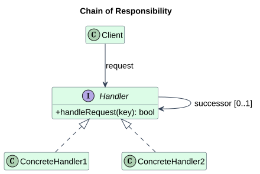
Client 发起请求；Handler 定义处理入口并引用 successor；ConcreteHandler1/2 决定处理还是转发。successor 是同一种抽象角色，因此链长可变。
可编辑 PlantUML 源码。角色图根据参考 PDF 重绘，工程变体见下文。
完整 C++17 示例¶
#include <iostream>
#include <memory>
#include <string>
#include <utility>
class Handler {
std::unique_ptr<Handler> next_;
protected:
virtual bool tryHandle(const std::string& key) const = 0;
public:
virtual ~Handler() = default;
void setNext(std::unique_ptr<Handler> next) { next_ = std::move(next); }
bool handle(const std::string& key) const {
if (tryHandle(key)) return true;
return next_ ? next_->handle(key) : false;
}
};
class Cache final : public Handler {
bool tryHandle(const std::string& key) const override {
if (key != "local") return false;
std::cout << "cache hit\n";
return true;
}
};
class Repository final : public Handler {
bool tryHandle(const std::string& key) const override {
if (key != "remote") return false;
std::cout << "repository hit\n";
return true;
}
};
int main() {
Cache head;
head.setNext(std::make_unique<Repository>());
head.handle("local");
head.handle("remote");
std::cout << std::boolalpha << head.handle("missing") << '\n';
}
调用过程、输出与 UML 对应¶
Cache 对应 ConcreteHandler1，Repository 对应 ConcreteHandler2；Handler::next_ 对应 successor。local 在首节点终止，remote 转发一次，missing 返回 false。输出依次为 cache hit、repository hit、false。
优点、代价与适用边界¶
优点是接收者可替换、顺序可配置；代价是运行时才知道请求落到哪里，可能无人处理。适合优先级查找、审批、事件冒泡；若只有固定的两个简单分支，直接函数更清晰。
与相似模式的区别¶
Command 封装“要做什么”，责任链决定“谁来处理”。HTTP 中间件常让多个节点都执行，是责任链的工程变体；GoF 经典示例是找到处理者后停止。
更深入的 C++ 实现问题¶
必须明确终止规则、未处理结果和异常策略。共享后继可能形成环；本例用 unique_ptr 表示单向独占链，返回 bool 显式报告未处理。深链会产生递归栈开销，可改循环遍历。
一句话记忆¶
让多个处理者依次获得处理请求的机会，使发送者不必指定最终接收者。
02. Command / 命令模式¶
所属类别：Behavioral。 速查卡片
核心思想¶
把一次请求封装为对象，使请求可作为参数保存、排队、记录或撤销。
为什么需要：从问题推导结构¶
菜单、快捷键和宏录制如果直接调用文档的所有修改方法，会重复参数处理，也无法保存“这一次修改”。需要一个具有身份、参数及执行状态的请求对象。
典型案例： C++ 文本编辑器把插入操作放入历史记录，支持撤销。
先让 Receiver 管真实文档；再把插入内容封装到 ConcreteCommand；Invoker 只调用 execute/undo 并保存历史；Client 负责绑定命令和文档。撤销能力需要额外保存旧状态，封装请求本身并不会自动产生撤销。
UML 结构与参与者¶
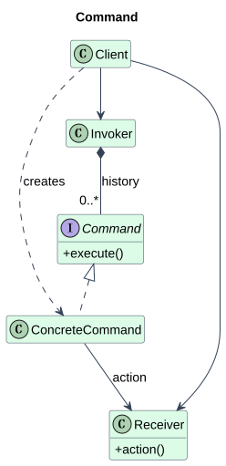
Command 定义 execute；ConcreteCommand 保存接收者和请求参数；Receiver 执行业务；Invoker 持有并触发命令；Client 创建和配置命令。
可编辑 PlantUML 源码。角色图根据参考 PDF 重绘，工程变体见下文。
完整 C++17 示例¶
#include <iostream>
#include <memory>
#include <string>
#include <utility>
#include <vector>
class Document {
std::string text_;
public:
const std::string& text() const { return text_; }
void set(std::string s) { text_ = std::move(s); }
};
struct Command {
virtual ~Command() = default;
virtual void execute() = 0;
virtual void undo() = 0;
};
class Insert final : public Command {
Document& doc_;
std::string addition_, before_;
public:
Insert(Document& d, std::string s) : doc_(d), addition_(std::move(s)) {}
void execute() override {
before_ = doc_.text();
doc_.set(before_ + addition_);
}
void undo() override { doc_.set(before_); }
};
class History {
std::vector<std::unique_ptr<Command>> commands_;
public:
void run(std::unique_ptr<Command> c) {
commands_.reserve(commands_.size() + 1); // 先保证历史能接收命令
c->execute();
commands_.push_back(std::move(c));
}
void undo() {
if (commands_.empty()) return;
commands_.back()->undo();
commands_.pop_back();
}
};
int main() {
Document d; // 接收者先构造、后析构
History h;
h.run(std::make_unique<Insert>(d, "C++"));
h.run(std::make_unique<Insert>(d, "17"));
std::cout << d.text() << '\n';
h.undo();
std::cout << d.text() << '\n';
}
调用过程、输出与 UML 对应¶
Document 是 Receiver，Insert 是 ConcreteCommand，History 是 Invoker。两次请求输出 C++17，撤销最后一次后输出 C++；命令持有非拥有引用，声明顺序保证文档覆盖历史生命周期。
优点、代价与适用边界¶
优点是 UI 与业务解耦、命令可排队和组合；代价是命令对象与历史占用内存，失败与重复执行语义需要设计。适合编辑器、事务任务和宏；只需立即调用一次的函数通常无需命令层。
与相似模式的区别¶
Strategy 描述可替换的算法，Command 描述一次具体请求；Memento 保存状态快照，可以辅助 Command 撤销，但不负责触发请求。
更深入的 C++ 实现问题¶
本例只支持线性历史，并在成功执行后入栈。若撤销后再编辑，应清除 redo 分支。异常发生时要保证文档与历史一致；异步队列必须确保 Receiver 比命令活得更久。
原笔记的基础案例与延伸（审核后保留）¶
以下基础代码保留原笔记的另一种表述。裸指针是非拥有引用；shared_ptr 是共享拥有，不应直接据此画独占组合。示例片段没有 main 的部分用于单独编译，不与上文同名类合并。
简单示例¶
#include <iostream>
#include <memory>
using namespace std;
class Receiver {
public:
void action() {
cout << "Receiver action\n";
}
};
class Command {
public:
virtual void execute() = 0;
virtual ~Command() = default;
};
class ConcreteCommand : public Command {
private:
Receiver* receiver;
public:
ConcreteCommand(Receiver* r) : receiver(r) {}
void execute() override {
receiver->action();
}
};
一句话记忆¶
把一次请求封装为对象，使请求可作为参数保存、排队、记录或撤销。
03. Interpreter / 解释器模式¶
所属类别：Behavioral。 速查卡片
核心思想¶
用对象表示小型语言的语法规则，并递归解释由这些规则组成的句子。
为什么需要：从问题推导结构¶
当条件规则由用户组合时，固定 if/else 不能表示任意嵌套表达式。若每种表达式都在中央 switch 中求值，增加语法会不断修改中央解释器。
典型案例： 构建工具解释“变量 + 常量”组成的配置表达式。
先限定语言 expr := number | variable | expr + expr；把 number 与 variable 作为终结表达式，把加法作为含两个子表达式的非终结表达式；Context 提供变量环境。客户端先构造语法树，再沿树递归求值。
UML 结构与参与者¶
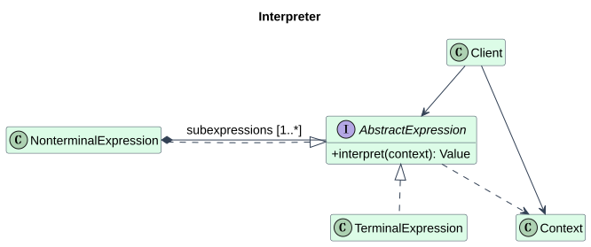
AbstractExpression 定义 interpret；TerminalExpression 解释叶子；NonterminalExpression 组合子表达式；Context 提供外部环境；Client 创建并求值表达式树。
可编辑 PlantUML 源码。角色图根据参考 PDF 重绘，工程变体见下文。
完整 C++17 示例¶
#include <iostream>
#include <memory>
#include <string>
#include <unordered_map>
#include <utility>
using Context = std::unordered_map<std::string, int>;
struct Expression {
virtual ~Expression() = default;
virtual int interpret(const Context& c) const = 0;
};
class Number final : public Expression {
int value_;
public:
explicit Number(int n) : value_(n) {}
int interpret(const Context&) const override { return value_; }
};
class Variable final : public Expression {
std::string name_;
public:
explicit Variable(std::string n) : name_(std::move(n)) {}
int interpret(const Context& c) const override { return c.at(name_); }
};
class Add final : public Expression {
std::unique_ptr<Expression> left_, right_;
public:
Add(std::unique_ptr<Expression> l, std::unique_ptr<Expression> r)
: left_(std::move(l)), right_(std::move(r)) {}
int interpret(const Context& c) const override {
return left_->interpret(c) + right_->interpret(c);
}
};
int main() {
Context c{{"jobs", 4}};
Add tree(std::make_unique<Variable>("jobs"), std::make_unique<Number>(2));
std::cout << tree.interpret(c) << '\n';
}
调用过程、输出与 UML 对应¶
Number/Variable 是 TerminalExpression，Add 是 NonterminalExpression。树为 jobs + 2：Variable 从 Context 得到 4，Number 得到 2，Add 输出 6。unique_ptr 保证递归销毁语法树。
优点、代价与适用边界¶
优点是简单语法可直接映射成类、组合规则容易；代价是语法越多类越多，逐节点虚调用可能慢。适合小 DSL、简单过滤表达式；完整 C++ 解析器宜使用成熟解析技术与 AST 工具。
与相似模式的区别¶
Composite 解释树的结构，Interpreter 为这棵树赋予文法与求值语义。Visitor 可以把求值、打印等操作从 AST 节点中分离。解析文本和解释 AST 是不同阶段。
更深入的 C++ 实现问题¶
PDF 中 interpret(): Context 是示意性标注，并非普遍返回类型；本例 interpret(const Context&) 返回 int。手工建树只展示解释阶段，不宣称已实现词法/语法分析。缺失变量用 at 抛出异常；整数溢出在实际语言中应定义规则。
一句话记忆¶
用对象表示小型语言的语法规则，并递归解释由这些规则组成的句子。
04. Iterator / 迭代器模式¶
所属类别：Behavioral。 速查卡片
核心思想¶
在不暴露聚合对象内部表示的前提下，提供顺序访问元素的方法。
为什么需要：从问题推导结构¶
若客户端直接索引内部 vector，未来改为分块存储或过滤视图就会破坏调用者。遍历位置也不应该保存在仓库里，否则两个遍历者互相干扰。
典型案例： 遥测样本仓库对客户端提供只读遍历，而隐藏存储容器。
把当前位置拆到 ConcreteIterator；Aggregate 提供创建迭代器的入口；每个迭代器保存自己的游标。客户端只使用 done/value/next，不访问存储布局。
UML 结构与参与者¶
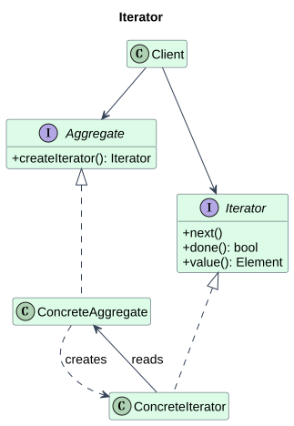
Aggregate 创建 Iterator；ConcreteAggregate 提供具体元素；Iterator 定义遍历协议；ConcreteIterator 保存位置和聚合对象引用；Client 驱动遍历。
可编辑 PlantUML 源码。角色图根据参考 PDF 重绘，工程变体见下文。
完整 C++17 示例¶
#include <iostream>
#include <memory>
#include <stdexcept>
#include <vector>
struct Iterator {
virtual ~Iterator() = default;
virtual bool done() const = 0;
virtual int value() const = 0;
virtual void next() = 0;
};
struct Aggregate {
virtual ~Aggregate() = default;
virtual std::unique_ptr<Iterator> createIterator() const = 0;
};
class Samples final : public Aggregate {
std::vector<int> data_{10, 20, 30};
class Cursor final : public Iterator {
const Samples& source_;
std::size_t index_ = 0;
public:
explicit Cursor(const Samples& s) : source_(s) {}
bool done() const override { return index_ >= source_.data_.size(); }
int value() const override { return source_.data_.at(index_); }
void next() override { if (!done()) ++index_; }
};
public:
std::unique_ptr<Iterator> createIterator() const override {
return std::make_unique<Cursor>(*this);
}
};
int main() {
Samples s;
auto it = s.createIterator();
for (; !it->done(); it->next()) std::cout << it->value() << '\n';
}
调用过程、输出与 UML 对应¶
Samples 是 ConcreteAggregate，嵌套 Cursor 是 ConcreteIterator。输出 10、20、30；at 检查边界。聚合对象只读，游标分别属于迭代器；创建两个游标不会共享当前位置。
优点、代价与适用边界¶
优点是遍历状态独立、表示被隐藏；代价是失效规则和边界协议更复杂。适合自定义集合、视图、多个并行遍历；标准容器优先使用 begin/end，避免重复造轮子。
与相似模式的区别¶
Visitor 关注对不同类型元素执行操作，Iterator 关注取出元素；两者可以一起使用。范围 for 是语法，容器满足迭代器协议才是其背后的设计。
更深入的 C++ 实现问题¶
PDF 的 createIterator(): Context 和 next(): Context 不应机械理解为具体 API。本例创建 unique_ptr
一句话记忆¶
在不暴露聚合对象内部表示的前提下，提供顺序访问元素的方法。
05. Mediator / 中介者模式¶
所属类别：Behavioral。 速查卡片
核心思想¶
把多个对象的交互规则集中到中介对象，使同事对象不必彼此直接引用。
为什么需要：从问题推导结构¶
若每个控件知道所有其他控件，n 个控件可能出现接近 n² 的联系；改交互规则时要跨越许多类。控件应该报告事件，而不应该决定整个对话框的业务流程。
典型案例： 配置对话框中，复选框控制应用按钮是否可用。
让 Colleague 只认识 Mediator；具体中介者持有控件引用并解释事件；控件保留自己的状态。复选框报告 changed，中介者决定更新按钮。
UML 结构与参与者¶
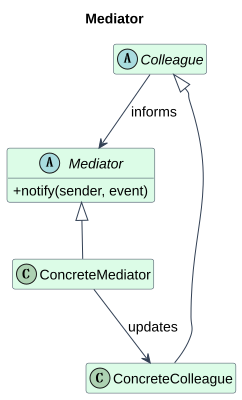
Mediator 定义通知入口；ConcreteMediator 集中协调规则；Colleague 引用中介者；ConcreteColleague 报告事件并接受更新。
可编辑 PlantUML 源码。角色图根据参考 PDF 重绘，工程变体见下文。
完整 C++17 示例¶
#include <iostream>
#include <stdexcept>
class Colleague;
struct Mediator {
virtual ~Mediator() = default;
virtual void changed(const Colleague& sender) = 0;
};
class Colleague {
protected:
Mediator& mediator_;
public:
explicit Colleague(Mediator& m) : mediator_(m) {}
virtual ~Colleague() = default;
};
class CheckBox final : public Colleague {
bool checked_ = false;
public:
using Colleague::Colleague;
bool checked() const { return checked_; }
void check(bool b) { checked_ = b; mediator_.changed(*this); }
};
class Button final : public Colleague {
bool enabled_ = false;
public:
using Colleague::Colleague;
void enable(bool b) { enabled_ = b; }
bool enabled() const { return enabled_; }
};
class Dialog final : public Mediator {
CheckBox* check_ = nullptr;
Button* button_ = nullptr;
public:
void bind(CheckBox& c, Button& b) { check_ = &c; button_ = &b; }
void changed(const Colleague& sender) override {
if (!check_ || !button_) throw std::logic_error("unbound dialog");
if (&sender == check_) button_->enable(check_->checked());
}
};
int main() {
Dialog d;
CheckBox c(d);
Button b(d);
d.bind(c, b);
c.check(true);
std::cout << std::boolalpha << b.enabled() << '\n';
}
调用过程、输出与 UML 对应¶
Dialog 是 ConcreteMediator，CheckBox/Button 是两个 ConcreteColleague。check(true) 经 changed 让按钮启用，输出 true；按钮没有复选框引用，复选框也不知道按钮。
优点、代价与适用边界¶
优点是交互规则集中、控件可复用；代价是中介者可能变成巨型对象。适合 GUI 联动、房间会话调度；彼此独立的控件无需额外中介者。
与相似模式的区别¶
Observer 传播状态变化，Mediator 决定对象之间如何协作。Facade 通常向外提供子系统入口，而同事主动向中介者报告事件。
更深入的 C++ 实现问题¶
通知与更新要避免相互触发形成死循环。本例 setEnabled 不再次发事件；非拥有引用避免同事和中介者共享指针循环。中介者绑定完成后才允许触发事件。
一句话记忆¶
把多个对象的交互规则集中到中介对象，使同事对象不必彼此直接引用。
06. Memento / 备忘录模式¶
所属类别：Behavioral。 速查卡片
核心思想¶
在保持封装的前提下保存对象的内部状态，使它以后可以恢复到该状态。
为什么需要：从问题推导结构¶
如果历史管理器直接读取对象的所有私有字段，它就依赖对象内部布局。修改内部表示会迫使历史管理器同步改动，还会让外部可以伪造不合法状态。
典型案例： 编辑器保存一次文本状态，并在修改后恢复。
让 Originator 自己生成 Memento；快照内部内容对 Caretaker 不可见；Caretaker 只保存和交还快照；恢复时仍由 Originator 解释。
UML 结构与参与者¶
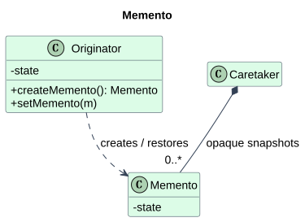
Originator 知道状态语义、创建和恢复快照；Memento 封装状态；Caretaker 管快照的保存期限与历史顺序，不修改快照内容。
可编辑 PlantUML 源码。角色图根据参考 PDF 重绘，工程变体见下文。
完整 C++17 示例¶
#include <iostream>
#include <string>
#include <utility>
#include <vector>
class Editor {
std::string text_;
public:
class Memento {
std::string text_;
explicit Memento(std::string s) : text_(std::move(s)) {}
friend class Editor;
public:
Memento(const Memento&) = default;
Memento& operator=(const Memento&) = default;
};
void write(std::string s) { text_ = std::move(s); }
const std::string& text() const { return text_; }
Memento save() const { return Memento(text_); }
void restore(const Memento& m) { text_ = m.text_; }
};
class History {
std::vector<Editor::Memento> snapshots_;
public:
void remember(const Editor& e) { snapshots_.push_back(e.save()); }
void undo(Editor& e) {
if (snapshots_.empty()) return;
e.restore(snapshots_.back());
snapshots_.pop_back();
}
};
int main() {
Editor e;
History h;
e.write("draft");
h.remember(e);
e.write("final");
h.undo(e);
std::cout << e.text() << '\n';
}
调用过程、输出与 UML 对应¶
Editor 对应 Originator，History 对应 Caretaker。History 能复制快照但不能读取其中 text_；恢复后输出 draft。C++ 的嵌套类不会自动让外部类访问其私有成员，因此显式声明 friend。
优点、代价与适用边界¶
优点是撤销与封装兼顾；代价是复制大量状态耗内存、跨版本恢复需兼容。适合小型文档撤销和检查点；不可复制的外部设备状态不能靠内存快照直接恢复。
与相似模式的区别¶
Prototype 创建一个新对象，Memento 恢复已有对象。Command 记录行为，Memento 记录状态；状态快照不等于数据库持久化或事务回滚。
更深入的 C++ 实现问题¶
本例用嵌套类的私有状态和 friend Editor 实现宽接口/窄接口分离。实际快照应带来源标识，避免把 A 文档快照恢复到 B；文件句柄、远端副作用和锁通常不属于可直接复制的状态。
一句话记忆¶
在保持封装的前提下保存对象的内部状态，使它以后可以恢复到该状态。
07. Observer / 观察者模式¶
所属类别：Behavioral。 速查卡片
核心思想¶
建立一对多依赖，使主题变化时通知所有已订阅的观察者。
为什么需要：从问题推导结构¶
如果数据模型直接调用每种 UI 面板，新增曲线或日志订阅者就要修改模型。主题应只知道一个抽象的 update 协议，观察者的数量和类型由注册过程决定。
典型案例： 传感器数据模型把新温度推送给显示面板。
先定义 Subject 的 attach/detach/notify；具体主题更新自身数据后通知；具体观察者实现 update。这里选 push 方式把温度直接传入，PDF 的 observes 箭头则示意 pull 方式观察者主动读取主题。
UML 结构与参与者¶
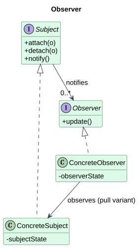
Subject 管理订阅并通知；ConcreteSubject 保存业务状态；Observer 定义 update；ConcreteObserver 更新自己的呈现状态，可按需引用主题查询数据。
可编辑 PlantUML 源码。角色图根据参考 PDF 重绘，工程变体见下文。
完整 C++17 示例¶
#include <algorithm>
#include <iostream>
#include <memory>
#include <vector>
struct Observer {
virtual ~Observer() = default;
virtual void update(int temperature) = 0;
};
struct Subject {
virtual ~Subject() = default;
virtual void attach(const std::shared_ptr<Observer>&) = 0;
virtual void detach(const std::shared_ptr<Observer>&) = 0;
virtual void notify() = 0;
};
class Sensor final : public Subject {
std::vector<std::weak_ptr<Observer>> observers_;
int temperature_ = 0;
public:
void detach(const std::shared_ptr<Observer>& o) override {
observers_.erase(std::remove_if(observers_.begin(), observers_.end(),
[&](const auto& w) { auto p = w.lock(); return !p || p == o; }),
observers_.end());
}
void attach(const std::shared_ptr<Observer>& o) override {
if (!o) return;
detach(o); // 避免重复订阅，并清除已过期记录
observers_.push_back(o);
}
void set(int t) { temperature_ = t; notify(); }
void notify() override {
std::vector<std::shared_ptr<Observer>> snapshot;
for (const auto& w : observers_) if (auto p = w.lock()) snapshot.push_back(p);
const int eventValue = temperature_;
for (const auto& p : snapshot) p->update(eventValue);
}
};
class Display final : public Observer {
void update(int t) override { std::cout << "temperature=" << t << '\n'; }
};
int main() {
Sensor s;
auto d = std::make_shared<Display>();
s.attach(d);
s.set(25);
s.detach(d);
s.set(30); // 已退订，不输出
}
调用过程、输出与 UML 对应¶
Sensor 是 ConcreteSubject，Display 是 ConcreteObserver；输出 temperature=25。弱引用是非拥有关系，所以 UML 用关联而不是组合。推送变体不需要 ConcreteObserver → ConcreteSubject 这一反向引用。
优点、代价与适用边界¶
优点是主题与订阅者解耦；代价是通知顺序、重入与生命周期难管理。适合 UI 模型、进程内事件；复杂跨进程消息系统需要额外队列、投递与可靠性协议。
与相似模式的区别¶
Mediator 编排协作，Observer 广播变化。发布订阅消息总线常有第三方 broker；GoF Observer 通常由主题直接维护订阅者，不能把两者所有语义画等号。
更深入的 C++ 实现问题¶
原笔记的 vector
原笔记的基础案例与延伸（审核后保留）¶
以下保留的裸指针基础示例只说明通知机制：调用者须保证订阅者始终存活，且回调不能修改 observers。上文提供了具备退订与生命周期处理的完整版本。
代码示例¶
#include <iostream>
#include <vector>
using namespace std;
class Observer {
public:
virtual void update(int value) = 0;
virtual ~Observer() = default;
};
class Subject {
private:
vector<Observer*> observers;
int state = 0;
public:
void attach(Observer* obs) {
observers.push_back(obs);
}
void setState(int s) {
state = s;
notify();
}
void notify() {
for (auto obs : observers) {
obs->update(state);
}
}
};
class ConcreteObserver : public Observer {
public:
void update(int value) override {
cout << "Observer received: " << value << endl;
}
};
一句话记忆¶
建立一对多依赖，使主题变化时通知所有已订阅的观察者。
08. State / 状态模式¶
所属类别：Behavioral。 速查卡片
核心思想¶
把状态相关行为封装到状态对象中，使上下文随内部状态改变而改变行为。
为什么需要：从问题推导结构¶
如果每个操作都 switch(state)，状态数和操作数增加后，相同转换规则分散在许多函数中。遗漏一个 case 就会产生不一致行为。需要把同一状态下的响应集中起来。
典型案例： 播放器在停止和播放状态下对同一个 toggle 请求作不同响应。
让 Context 委托当前 State；Stopped 和 Playing 分别实现行为并给出下一状态；Context 完成切换。状态机规定事件与转换，State 模式则是组织状态相关代码的方法。
UML 结构与参与者¶
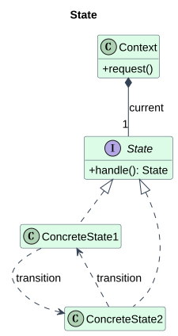
Context 保存当前 State 并接收请求；State 定义 handle；ConcreteState1/2 实现对应状态的行为，转换可由状态或上下文决定。
可编辑 PlantUML 源码。角色图根据参考 PDF 重绘，工程变体见下文。
完整 C++17 示例¶
#include <iostream>
#include <memory>
#include <utility>
struct State {
virtual ~State() = default;
virtual std::unique_ptr<State> toggle() const = 0;
};
class Playing;
class Stopped final : public State {
public:
std::unique_ptr<State> toggle() const override;
};
class Playing final : public State {
public:
std::unique_ptr<State> toggle() const override {
std::cout << "stop\n";
return std::make_unique<Stopped>();
}
};
std::unique_ptr<State> Stopped::toggle() const {
std::cout << "play\n";
return std::make_unique<Playing>();
}
class Player {
std::unique_ptr<State> state_ = std::make_unique<Stopped>();
public:
void toggle() {
auto next = state_->toggle(); // 先完成旧状态的方法调用
state_ = std::move(next); // 再析构旧状态
}
};
int main() {
Player p;
p.toggle();
p.toggle();
}
调用过程、输出与 UML 对应¶
Player 对应 Context，Stopped/Playing 对应两种 ConcreteState。初始停止，第一次 toggle 输出 play 并进入 Playing，第二次输出 stop 并恢复 Stopped；对相同请求的响应由当前状态决定。
优点、代价与适用边界¶
优点是状态行为局部化、转换明确；代价是类数增长，简单状态机不一定值得拆类。适合连接协议、设备流程和复杂 UI 状态；只有一个小 switch 时保留表驱动或枚举实现。
与相似模式的区别¶
Strategy 的替换围绕算法选择，State 的替换围绕生命周期和合法转换。状态并非必须自动变化，外部事件也能驱动；策略也可由内部策略管理器选择，区别在意图。
更深入的 C++ 实现问题¶
若状态在自己的成员函数里让 Context 删除当前状态，会发生类似 delete this 的生命周期陷阱。这里 handle 返回新状态，Context 等调用返回后再替换旧对象；生产状态机还应规定非法事件、进入/退出动作及异常后的状态。
一句话记忆¶
把状态相关行为封装到状态对象中，使上下文随内部状态改变而改变行为。
09. Strategy / 策略模式¶
所属类别：Behavioral。 速查卡片
核心思想¶
封装一族可替换算法，使算法可以独立于使用它的上下文变化。
为什么需要：从问题推导结构¶
若发送流程里嵌入每一种编码的分支，添加格式就要改发送流程。传输流程与编码算法是两个不同变化点，前者只需要“把值变成字符串”。
典型案例： 遥测模块按部署需求选择 CSV 或 JSON 编码算法。
抽出 Strategy 的 encode；ConcreteStrategy 提供格式；Context 持有一种策略并委托。客户端在启动或运行时选择策略，不改变发送流程。
UML 结构与参与者¶
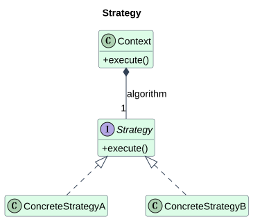
Strategy 定义算法协议；ConcreteStrategyA/B 实现不同算法；Context 提供业务入口，并把算法步骤委托给策略。
可编辑 PlantUML 源码。角色图根据参考 PDF 重绘，工程变体见下文。
完整 C++17 示例¶
#include <iostream>
#include <memory>
#include <stdexcept>
#include <string>
#include <utility>
struct Encoder {
virtual ~Encoder() = default;
virtual std::string encode(int value) const = 0;
};
class Csv final : public Encoder {
std::string encode(int v) const override { return "value," + std::to_string(v); }
};
class Json final : public Encoder {
std::string encode(int v) const override { return "{\"value\":" + std::to_string(v) + "}"; }
};
class Telemetry {
std::unique_ptr<Encoder> encoder_;
public:
explicit Telemetry(std::unique_ptr<Encoder> e) { setEncoder(std::move(e)); }
void setEncoder(std::unique_ptr<Encoder> e) {
if (!e) throw std::invalid_argument("null encoder");
encoder_ = std::move(e);
}
void send(int v) const { std::cout << encoder_->encode(v) << '\n'; }
};
int main() {
Telemetry t(std::make_unique<Csv>());
t.send(7);
t.setEncoder(std::make_unique<Json>());
t.send(7);
}
调用过程、输出与 UML 对应¶
Telemetry 对应 Context，Encoder 对应 Strategy，Csv/Json 是两个 ConcreteStrategy。相同的值 7 先输出 value,7，再输出 {"value":7}；切换来自客户端，编码器之间没有状态转换依赖。
优点、代价与适用边界¶
优点是算法可独立测试、避免中央条件分支；代价是客户端需了解选项，小算法拆类可能繁琐。适合压缩、路径规划、编码；一个 lambda 已足够时不必建立类层次。
与相似模式的区别¶
State 根据对象状态表达行为和转换，Strategy 根据任务选择算法；Template Method 用继承替换算法步骤，Strategy 用组合替换整个算法。
更深入的 C++ 实现问题¶
本例用 unique_ptr 表示独占策略并禁止空指针。小型无状态算法可用 std::function；性能关键路径可用模板或策略类型静态绑定。策略接口必须统一输出语义，不能把完全不同的业务硬装进同一函数。
原笔记的基础案例与延伸（审核后保留）¶
以下基础代码保留原笔记的另一种表述。裸指针是非拥有引用；shared_ptr 是共享拥有，不应直接据此画独占组合。示例片段没有 main 的部分用于单独编译，不与上文同名类合并。
代码示例¶
#include <utility>
#include <iostream>
#include <memory>
using namespace std;
class Strategy {
public:
virtual void execute() = 0;
virtual ~Strategy() = default;
};
class ConcreteStrategyA : public Strategy {
public:
void execute() override {
cout << "Using strategy A\n";
}
};
class ConcreteStrategyB : public Strategy {
public:
void execute() override {
cout << "Using strategy B\n";
}
};
class Context {
private:
unique_ptr<Strategy> strategy;
public:
void setStrategy(unique_ptr<Strategy> s) {
strategy = move(s);
}
void doWork() {
if (strategy) {
strategy->execute();
}
}
};
一句话记忆¶
封装一族可替换算法，使算法可以独立于使用它的上下文变化。
10. Template Method / 模板方法模式¶
所属类别：Behavioral。 速查卡片
核心思想¶
在基类中固定算法骨架，把其中可变步骤交给派生类实现。
为什么需要：从问题推导结构¶
如果 CSV 和 JSON 导入器各自实现全流程，很容易一个先验证后保存、另一个跳过验证。公共流程应只有一处定义，扩展点只能改步骤，不能随意改变顺序。
典型案例： 数据导入流程固定为读取、解析、保存，不同文件实现各自解析。
基类的 run 是模板方法；它按顺序调用 read、parse、save；其中 parse 是纯虚扩展点。客户端只调用 run，派生类只实现自己负责的解析。
UML 结构与参与者¶
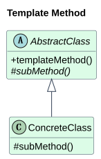
AbstractClass 定义 templateMethod 和 primitive operations；ConcreteClass 重写可变步骤；钩子可提供默认实现，让派生类可选地扩展。
可编辑 PlantUML 源码。角色图根据参考 PDF 重绘，工程变体见下文。
完整 C++17 示例¶
#include <iostream>
#include <string>
class Importer {
protected:
virtual int parse(const std::string& data) const = 0;
public:
virtual ~Importer() = default;
void run(const std::string& data) const {
std::cout << "read\n";
const int records = parse(data);
std::cout << "save " << records << '\n';
}
};
class CsvImporter final : public Importer {
int parse(const std::string& data) const override {
std::cout << "parse CSV\n";
return data.empty() ? 0 : 1; // 演示单条记录；不是完整 CSV 解析器
}
};
int main() {
CsvImporter csv;
const Importer& importer = csv;
importer.run("7,42");
}
调用过程、输出与 UML 对应¶
Importer 是 AbstractClass，run 是 templateMethod，parse 是 subMethod。CsvImporter 是 ConcreteClass。输出顺序固定为 read、parse CSV、save 1；示例只用单记录模拟解析，重点是不可随意重排的流程。
优点、代价与适用边界¶
优点是复用骨架、统一流程约束；代价是依赖继承，扩展点过多会让基类脆弱。适合生命周期稳定的处理管线；若步骤顺序也频繁变动，更适合组合管线。
与相似模式的区别¶
Strategy 替换算法对象，Template Method 重写骨架里的局部步骤。C++ template 是泛型语法，Template Method 是设计模式，两者名称相近但并非同一概念。
更深入的 C++ 实现问题¶
run 保持非虚，避免派生类通过虚调用替换公共流程；这也是 Non-Virtual Interface 的常见形态。不要从构造/析构函数中依赖派生虚函数分派；出错时公共流程还需定义清理和提交策略。
一句话记忆¶
在基类中固定算法骨架，把其中可变步骤交给派生类实现。
11. Visitor / 访问者模式¶
所属类别：Behavioral。 速查卡片
核心思想¶
把作用于稳定对象结构上的操作移到访问者中，使新增操作无需修改既有元素类。
为什么需要：从问题推导结构¶
若所有节点都不断增加 print、typeCheck、export 等方法，节点职责越来越杂。节点类型相对稳定，而操作变化很快，就适合让每个操作成为一个 Visitor。
典型案例： 编译器对整数与加法 AST 节点新增打印操作。
首先让 Element 声明 accept；ConcreteElement 的 accept 调用 visitor.visit(*this)；Visitor 对每种具体元素提供一个重载；ConcreteVisitor 实现一个完整操作。第一次虚调用确定元素类型，第二次虚调用确定操作实现。
UML 结构与参与者¶
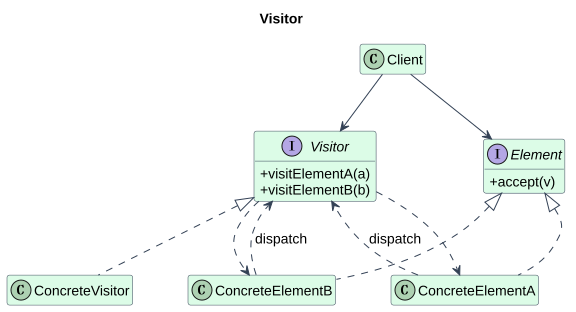
Element 定义 accept；ConcreteElementA/B 把自身交给正确重载；Visitor 声明 visitElementA/B；ConcreteVisitor 实现操作；Client 把元素和访问者配对。
可编辑 PlantUML 源码。角色图根据参考 PDF 重绘，工程变体见下文。
完整 C++17 示例¶
#include <iostream>
#include <memory>
#include <utility>
class Number;
class Add;
struct Visitor {
virtual ~Visitor() = default;
virtual void visit(const Number&) = 0;
virtual void visit(const Add&) = 0;
};
struct Node {
virtual ~Node() = default;
virtual void accept(Visitor&) const = 0;
};
class Number final : public Node {
int value_;
public:
explicit Number(int v) : value_(v) {}
int value() const { return value_; }
void accept(Visitor& v) const override { v.visit(*this); }
};
class Add final : public Node {
std::unique_ptr<Node> left_, right_;
public:
Add(std::unique_ptr<Node> l, std::unique_ptr<Node> r)
: left_(std::move(l)), right_(std::move(r)) {}
const Node& left() const { return *left_; }
const Node& right() const { return *right_; }
void accept(Visitor& v) const override { v.visit(*this); }
};
class Printer final : public Visitor {
void visit(const Number& n) override { std::cout << n.value(); }
void visit(const Add& a) override {
std::cout << '(';
a.left().accept(*this);
std::cout << '+';
a.right().accept(*this);
std::cout << ')';
}
};
int main() {
Add ast(std::make_unique<Number>(2), std::make_unique<Number>(3));
Printer p;
ast.accept(p);
std::cout << '\n';
}
调用过程、输出与 UML 对应¶
Node 对应 Element，Number/Add 对应两种 ConcreteElement，Printer 是 ConcreteVisitor。ast.accept(p) 分派到 Add::accept，再调用 Printer::visit(Add)，递归输出 (2+3)。这里打印的是表达式结构，并未执行加法求值。
优点、代价与适用边界¶
优点是新增操作集中且无需改节点；代价是新增元素类型会改变所有访问者，可能暴露内部信息。适合类型集合稳定的 AST 和报表结构；插件可任意增元素类型时不宜采用封闭访问者接口。
与相似模式的区别¶
Iterator 解决遍历，Visitor 解决按具体类型操作；Composite 表示 AST 树结构。std::variant + std::visit 是封闭类型集合的现代替代方案，但仍需分析类型与操作哪个更稳定。
更深入的 C++ 实现问题¶
C++ 重载在编译期选择，仅凭 Element& 调用 visit 不会自动按动态类型选择重载；accept 内的 *this 具有具体静态类型，才构成经典双分派。访问者能否递归、是否修改元素应在接口中明确。
一句话记忆¶
把作用于稳定对象结构上的操作移到访问者中，使新增操作无需修改既有元素类。
Structural / 结构型模式¶
12. Adapter / 适配器模式¶
所属类别：Structural。 速查卡片
核心思想¶
把已有接口转换成客户端需要的接口，使原本不兼容的组件可以协作。
为什么需要：从问题推导结构¶
业务代码要求摄氏温度接口，第三方驱动却返回华氏温度。若业务代码到处调用旧驱动并换算，兼容逻辑会散落各处，替换硬件时很难找全。
典型案例： 统一温度传感器接口接入返回华氏温度的旧驱动。
先明确客户端 Target 接口的单位与错误约定；ConcreteAdapter 实现它，内部调用 Adaptee 并换算。旧驱动不变，业务只依赖 Target；转换必须覆盖语义而不仅仅改函数名。
UML 结构与参与者¶
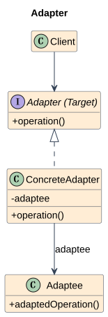
PDF 把目标接口命名为 Adapter，具体包装者命名为 ConcreteAdapter；本文图中保留这一命名并标注 Target。Adaptee 是旧接口，Client 只认识目标协议。
可编辑 PlantUML 源码。角色图根据参考 PDF 重绘，工程变体见下文。
完整 C++17 示例¶
#include <iostream>
class LegacyProbe {
public:
double fahrenheit() const { return 77.0; }
};
struct Temperature {
virtual ~Temperature() = default;
virtual double celsius() const = 0;
};
class ProbeAdapter final : public Temperature {
const LegacyProbe& probe_;
public:
explicit ProbeAdapter(const LegacyProbe& p) : probe_(p) {}
double celsius() const override { return (probe_.fahrenheit() - 32.0) * 5.0 / 9.0; }
};
void display(const Temperature& t) { std::cout << t.celsius() << " C\n"; }
int main() {
LegacyProbe old;
ProbeAdapter adapter(old);
display(adapter);
}
调用过程、输出与 UML 对应¶
Temperature 是 Target，ProbeAdapter 是 ConcreteAdapter，LegacyProbe 是 Adaptee。display 不知道华氏接口；77°F 经适配输出 25 C。原笔记按值保存 Adaptee 也是对象适配器，但其生命周期关系应画组合。
优点、代价与适用边界¶
优点是复用旧组件且隔离兼容代码；代价是多一层调用，转换可能有信息损失。适合旧库、硬件驱动、第三方 SDK；双方本来接口一致就不必加适配器。
与相似模式的区别¶
Decorator 保持原接口并增加职责，Adapter 改变客户端看到的接口或语义；Facade 简化一组子系统入口，Adapter 主要解决接口不兼容。Bridge 通常在设计阶段拆出两个变化维度。
更深入的 C++ 实现问题¶
对象适配器用组合或引用旧组件；类适配器在 C++ 可通过多重继承实现，但更受具体类型约束。本例以引用表示非拥有关系，驱动必须覆盖适配器生命周期；温度单位的变换属于接口契约。
原笔记的基础案例与延伸（审核后保留）¶
代码示例¶
#include <iostream>
using namespace std;
// 目标接口：客户端想使用的接口
class Target {
public:
virtual void request() = 0;
virtual ~Target() = default;
};
// 旧接口：已经存在，但接口不兼容
class Adaptee {
public:
void specificRequest() {
cout << "Old specific request\n";
}
};
// 适配器：把旧接口包装成新接口
class Adapter : public Target {
private:
Adaptee adaptee;
public:
void request() override {
adaptee.specificRequest();
}
};
适用场景¶
- 旧代码不方便改
- 第三方库接口不符合当前系统要求
- 想复用旧类
一句话记忆¶
把已有接口转换成客户端需要的接口，使原本不兼容的组件可以协作。
13. Bridge / 桥接模式¶
所属类别：Structural。 速查卡片
核心思想¶
把抽象功能与底层实现拆成两条可独立扩展的层次，再通过组合连接。
为什么需要：从问题推导结构¶
如果按 BasicTVRemote、BasicRadioRemote、AdvancedTVRemote、AdvancedRadioRemote 派生，两种变化维度相乘；新增一个设备就要增加一批遥控器类。
典型案例： 不同类型的遥控器控制电视或收音机。
先拆出设备协议 Implementor；Abstraction 只做遥控器层面的流程，并调用设备协议；RefinedAbstraction 可增加静音等能力，具体设备各自实现底层动作。m 种遥控器与 n 种设备由近似 m+n 个类表达，而非 m×n 个组合类。
UML 结构与参与者¶
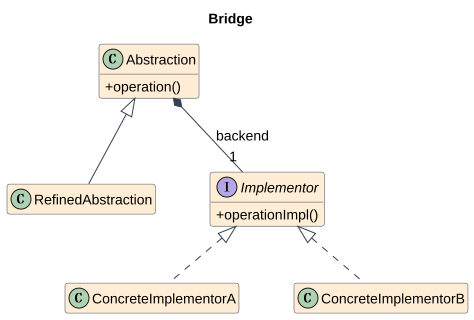
Abstraction 定义高层操作并持有 Implementor；ConcreteImplementorA/B 实现底层协议；RefinedAbstraction 是额外补充角色，用来展示抽象层也可以扩展。
可编辑 PlantUML 源码。角色图根据参考 PDF 重绘，工程变体见下文。
完整 C++17 示例¶
#include <iostream>
#include <memory>
#include <stdexcept>
#include <utility>
struct Device {
virtual ~Device() = default;
virtual void powerOn() = 0;
virtual void volume(int level) = 0;
};
class TV final : public Device {
void powerOn() override { std::cout << "TV on\n"; }
void volume(int v) override { std::cout << "TV volume " << v << '\n'; }
};
class Radio final : public Device {
void powerOn() override { std::cout << "Radio on\n"; }
void volume(int v) override { std::cout << "Radio volume " << v << '\n'; }
};
class Remote {
protected:
std::unique_ptr<Device> device_;
public:
explicit Remote(std::unique_ptr<Device> d) : device_(std::move(d)) {
if (!device_) throw std::invalid_argument("null device");
}
virtual ~Remote() = default;
void on() { device_->powerOn(); }
};
class AdvancedRemote final : public Remote {
public:
using Remote::Remote;
void mute() { device_->volume(0); }
};
int main() {
AdvancedRemote tv(std::make_unique<TV>());
AdvancedRemote radio(std::make_unique<Radio>());
tv.on(); tv.mute();
radio.on(); radio.mute();
}
调用过程、输出与 UML 对应¶
Remote/AdvancedRemote 是抽象维度，Device 的 TV/Radio 是实现维度。相同 AdvancedRemote 逻辑可控制两种设备，输出 TV on、TV volume 0、Radio on、Radio volume 0；增加新 Device 不修改遥控器。
优点、代价与适用边界¶
优点是两个维度独立变化、运行时可组合；代价是需要一个稳定底层协议，额外间接层可能影响可读性。适合平台后端、渲染系统；只存在一个变化维度时不必硬拆。
与相似模式的区别¶
Adapter 接合既有不兼容接口，Bridge 主动设计独立变化轴；Strategy 通常替换一个算法，Bridge 强调抽象层次与实现层次的独立扩展。仅有成员指针并不能证明使用了 Bridge。
更深入的 C++ 实现问题¶
PDF 用组合菱形表达 Abstraction 持有实现；具体所有权由实现选择。本例 unique_ptr 符合组合；原笔记 shared_ptr
原笔记的基础案例与延伸（审核后保留）¶
以下基础代码保留原笔记的另一种表述。裸指针是非拥有引用；shared_ptr 是共享拥有，不应直接据此画独占组合。示例片段没有 main 的部分用于单独编译，不与上文同名类合并。
代码示例¶
#include <iostream>
#include <memory>
using namespace std;
class Device {
public:
virtual void turnOn() = 0;
virtual void turnOff() = 0;
virtual ~Device() = default;
};
class TV : public Device {
public:
void turnOn() override { cout << "TV on\n"; }
void turnOff() override { cout << "TV off\n"; }
};
class Radio : public Device {
public:
void turnOn() override { cout << "Radio on\n"; }
void turnOff() override { cout << "Radio off\n"; }
};
class RemoteControl {
protected:
shared_ptr<Device> device;
public:
RemoteControl(shared_ptr<Device> d) : device(d) {}
virtual void on() { device->turnOn(); }
virtual void off() { device->turnOff(); }
virtual ~RemoteControl() = default;
};
一句话记忆¶
把抽象功能与底层实现拆成两条可独立扩展的层次，再通过组合连接。
14. Composite / 组合模式¶
所属类别：Structural。 速查卡片
核心思想¶
用树表示部分与整体，使客户端能通过统一接口处理叶子和组合节点。
为什么需要：从问题推导结构¶
若客户端区分文件与目录再递归，会把树遍历逻辑复制到多个操作中。客户端更希望对任意节点调用 size，目录自己负责对子节点汇总。
典型案例： 工程工作区把文件和目录统一为可计算大小的节点。
定义 Component 公共操作；Leaf 给出自己的结果；Composite 保存多个 Component 并递归合并。树的节点可以再次是 Composite，因此结构自然嵌套。
UML 结构与参与者¶
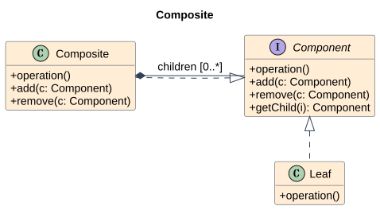
Component 是公共接口；Leaf 无子节点；Composite 管 children 并汇总操作。PDF add(in c: Composite) 过度限制孩子类型，本文修正为 Component，以允许叶子成为孩子。
可编辑 PlantUML 源码。角色图根据参考 PDF 重绘，工程变体见下文。
完整 C++17 示例¶
#include <iostream>
#include <memory>
#include <stdexcept>
#include <utility>
#include <vector>
struct Node {
virtual ~Node() = default;
virtual std::size_t size() const = 0;
};
class File final : public Node {
std::size_t bytes_;
public:
explicit File(std::size_t n) : bytes_(n) {}
std::size_t size() const override { return bytes_; }
};
class Directory final : public Node {
std::vector<std::unique_ptr<Node>> children_;
public:
void add(std::unique_ptr<Node> n) {
if (!n) throw std::invalid_argument("null child");
children_.push_back(std::move(n));
}
std::size_t size() const override {
std::size_t sum = 0;
for (const auto& n : children_) sum += n->size();
return sum;
}
};
int main() {
Directory root;
root.add(std::make_unique<File>(10));
auto sub = std::make_unique<Directory>();
sub->add(std::make_unique<File>(20));
root.add(std::move(sub));
const Node& whole = root;
std::cout << whole.size() << '\n';
}
调用过程、输出与 UML 对应¶
Node 是 Component，File 是 Leaf，Directory 是 Composite。顶层目录含 10 字节文件和含 20 字节文件的子目录，输出 30。size 时间为 O(N)，调用栈为树高 O(H)；需另行处理实际文件大小的溢出。
优点、代价与适用边界¶
优点是客户端统一处理树节点、递归结构自然；代价是叶子和目录并非所有操作都一致。适合目录、UI 树、场景图；扁平数据或任意有环图需要不同结构。
与相似模式的区别¶
Decorator 一般包装一个 Component 并附加行为，Composite 聚合多个 Component 表示整体；Interpreter 为特定树节点赋予语言规则。
更深入的 C++ 实现问题¶
透明式接口把 add/remove 放到 Component，但 Leaf 必须拒绝这些操作；安全式接口只在 Composite 提供管理方法。本例采用安全式，图保留 PDF 的透明式并说明差异。unique_ptr 实现严格所有权树，避免共享节点重复计数和引用环。
原笔记的基础案例与延伸（审核后保留）¶
以下基础代码保留原笔记的另一种表述。裸指针是非拥有引用；shared_ptr 是共享拥有，不应直接据此画独占组合。示例片段没有 main 的部分用于单独编译，不与上文同名类合并。
代码示例¶
#include <iostream>
#include <memory>
#include <vector>
using namespace std;
class Component {
public:
virtual void operation() = 0;
virtual ~Component() = default;
};
class Leaf : public Component {
public:
void operation() override {
cout << "Leaf operation\n";
}
};
class Composite : public Component {
private:
vector<shared_ptr<Component>> children;
public:
void add(shared_ptr<Component> child) {
children.push_back(child);
}
void operation() override {
cout << "Composite operation start\n";
for (auto& child : children) {
child->operation();
}
cout << "Composite operation end\n";
}
};
一句话记忆¶
用树表示部分与整体，使客户端能通过统一接口处理叶子和组合节点。
15. Decorator / 装饰器模式¶
所属类别：Structural。 速查卡片
核心思想¶
通过包装同一接口的对象，在运行时叠加额外职责。
为什么需要：从问题推导结构¶
若用继承组合“带前缀输出”“带审计输出”“带前缀且带审计输出”，每增加一种独立功能就扩大组合数量。职责应能按对象动态叠加，而不是按类型固定排列。
典型案例： 输出通道在基础控制台写入之外增加前缀和审计。
定义 Component 的 write；基础通道直接写入；Decorator 也实现 write，并拥有一个 Component；具体装饰者调用被包装对象前后添加行为。客户端依旧使用 Component。
UML 结构与参与者¶
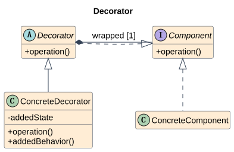
Component 定义共同协议；ConcreteComponent 执行基本职责；Decorator 保存 component 并转发；ConcreteDecorator 保存 addedState 或执行 addedBehavior。
可编辑 PlantUML 源码。角色图根据参考 PDF 重绘，工程变体见下文。
完整 C++17 示例¶
#include <iostream>
#include <memory>
#include <stdexcept>
#include <string>
#include <utility>
struct Sink {
virtual ~Sink() = default;
virtual void write(const std::string&) = 0;
};
class Console final : public Sink {
void write(const std::string& s) override { std::cout << s << '\n'; }
};
class Decorator : public Sink {
protected:
std::unique_ptr<Sink> inner_;
public:
explicit Decorator(std::unique_ptr<Sink> s) : inner_(std::move(s)) {
if (!inner_) throw std::invalid_argument("null sink");
}
};
class Prefix final : public Decorator {
std::string prefix_;
public:
Prefix(std::unique_ptr<Sink> s, std::string p)
: Decorator(std::move(s)), prefix_(std::move(p)) {}
void write(const std::string& s) override { inner_->write(prefix_ + s); }
};
class Audit final : public Decorator {
public:
using Decorator::Decorator;
void write(const std::string& s) override {
std::cout << "audit bytes=" << s.size() << '\n';
inner_->write(s);
}
};
int main() {
std::unique_ptr<Sink> sink = std::make_unique<Prefix>(
std::make_unique<Audit>(std::make_unique<Console>()), "[LOG] ");
sink->write("ready");
}
调用过程、输出与 UML 对应¶
Sink 是 Component，Console 是 ConcreteComponent，Decorator 是包装基类，Prefix/Audit 是 ConcreteDecorator。外层 Prefix 把 ready 转为 [LOG] ready，Audit 输出 audit bytes=11，Console 输出最终文本。
优点、代价与适用边界¶
优点是职责可组合、不修改原类；代价是包装层多、调试调用链困难，顺序会影响语义。适合流过滤、日志上下文、指标；无需动态组合时普通辅助函数可能更简单。
与相似模式的区别¶
Adapter 改接口，Decorator 保持接口加职责；Proxy 的主要意图是控制访问；Composite 管多个子对象。相同的包装形状可以服务不同意图，必须结合调用行为判断。
更深入的 C++ 实现问题¶
Prefix(Audit(Console)) 和 Audit(Prefix(Console)) 的审计对象不同；本例先 Prefix 再 Audit，所以审计计数含前缀。组合时需要明确空对象、异常传播及职责是否可重复叠加。
原笔记的基础案例与延伸（审核后保留）¶
以下基础代码保留原笔记的另一种表述。裸指针是非拥有引用；shared_ptr 是共享拥有，不应直接据此画独占组合。示例片段没有 main 的部分用于单独编译，不与上文同名类合并。
代码示例¶
#include <iostream>
#include <memory>
using namespace std;
class Coffee {
public:
virtual double cost() const = 0;
virtual ~Coffee() = default;
};
class BasicCoffee : public Coffee {
public:
double cost() const override {
return 10.0;
}
};
class CoffeeDecorator : public Coffee {
protected:
shared_ptr<Coffee> coffee;
public:
CoffeeDecorator(shared_ptr<Coffee> c) : coffee(c) {}
};
class MilkDecorator : public CoffeeDecorator {
public:
MilkDecorator(shared_ptr<Coffee> c) : CoffeeDecorator(c) {}
double cost() const override {
return coffee->cost() + 2.0;
}
};
class SugarDecorator : public CoffeeDecorator {
public:
SugarDecorator(shared_ptr<Coffee> c) : CoffeeDecorator(c) {}
double cost() const override {
return coffee->cost() + 1.0;
}
};
一句话记忆¶
通过包装同一接口的对象，在运行时叠加额外职责。
16. Facade / 外观模式¶
所属类别：Structural。 速查卡片
核心思想¶
给一组子系统接口提供更易使用的高层入口。
为什么需要：从问题推导结构¶
客户端如果知道每个编译子系统的调用顺序和中间表示，改一个内部阶段就可能影响所有调用者。大多数客户端只需要 compile(source)，不需要操作每个细节。
典型案例： 编译服务统一词法扫描、解析、生成代码的调用流程。
先找常用场景并封装其调用序列；Facade 协调子系统，而子系统仍各自处理实际工作。高级客户端可以在允许的边界上直接使用子系统，外观不必屏蔽一切。
UML 结构与参与者¶
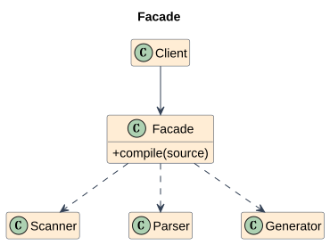
Facade 提供高层方法；SubsystemA/B 等提供底层服务；Client 调用外观。PDF 以 Complex system 矩形示意子系统群，而非一个统一父类。
可编辑 PlantUML 源码。角色图根据参考 PDF 重绘，工程变体见下文。
完整 C++17 示例¶
#include <iostream>
#include <string>
struct Scanner {
std::string scan(const std::string& source) const { return "tokens(" + source + ")"; }
};
struct Parser {
std::string parse(const std::string& tokens) const { return "ast(" + tokens + ")"; }
};
struct Generator {
std::string generate(const std::string& ast) const { return "code(" + ast + ")"; }
};
class CompilerFacade {
const Scanner& scanner_;
const Parser& parser_;
const Generator& generator_;
public:
CompilerFacade(const Scanner& s, const Parser& p, const Generator& g)
: scanner_(s), parser_(p), generator_(g) {}
std::string compile(const std::string& source) const {
return generator_.generate(parser_.parse(scanner_.scan(source)));
}
};
int main() {
Scanner s; Parser p; Generator g;
CompilerFacade compiler(s, p, g);
std::cout << compiler.compile("x+1") << '\n';
}
调用过程、输出与 UML 对应¶
CompilerFacade 对应 Facade，Scanner/Parser/Generator 是子系统。客户端一次调用获得 code(ast(tokens(x+1)))，外观内部保证阶段顺序；外部对象生命周期覆盖外观。原笔记一键启动电脑也是同一设计意图。
优点、代价与适用边界¶
优点是降低客户端知识负担并提供稳定入口；代价是外观可能膨胀，过度简化可能隐藏必要控制参数。适合 SDK、复杂库入口；本来只有一个简单接口时无需外观。
与相似模式的区别¶
Adapter 转换不兼容协议，Facade 聚合并简化多种接口；Mediator 处理同事间交互，Facade 通常从客户端单向调度子系统。
更深入的 C++ 实现问题¶
外观不必拥有子系统。本例引用外部对象，UML 用依赖/关联，不机械沿用菱形；异常策略、取消与阶段失败需要在高层接口中定义。示例只模拟编译阶段，不是可用的编译器实现。
原笔记的基础案例与延伸（审核后保留）¶
代码示例¶
#include <iostream>
using namespace std;
class CPU {
public:
void start() { cout << "CPU start\n"; }
};
class Memory {
public:
void load() { cout << "Memory load\n"; }
};
class Disk {
public:
void read() { cout << "Disk read\n"; }
};
class ComputerFacade {
private:
CPU cpu;
Memory memory;
Disk disk;
public:
void startComputer() {
cpu.start();
memory.load();
disk.read();
cout << "Computer started\n";
}
};
一句话记忆¶
给一组子系统接口提供更易使用的高层入口。
17. Flyweight / 享元模式¶
所属类别：Structural。 速查卡片
核心思想¶
共享可复用的内部状态，把每次使用的外部状态留在上下文中，以减少大量细粒度对象的存储。
为什么需要：从问题推导结构¶
如果一百万个字符位置各自保存昂贵的字形轮廓，会重复占用内存。重复的是“字符与字体对应的形状”，不同的是“这次画在哪里”。必须先把这两类状态分开。
典型案例： 文本渲染器共享同一字体与字符的字形数据，坐标每次传入。
把 intrinsicState 放入只读 ConcreteFlyweight；Client 保存 extrinsicState；FlyweightFactory 按完整键返回已有对象。调用 operation 时再传外部状态，因此同一享元可用于多个位置。
UML 结构与参与者¶
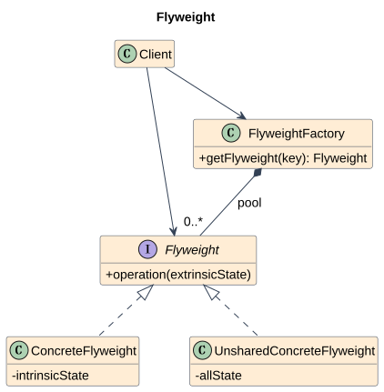
Flyweight 定义接收外部状态的操作；ConcreteFlyweight 保存可共享内部状态；FlyweightFactory 管共享对象；UnsharedConcreteFlyweight 表示不共享的变体；Client 管上下文。
可编辑 PlantUML 源码。角色图根据参考 PDF 重绘，工程变体见下文。
完整 C++17 示例¶
#include <iostream>
#include <memory>
#include <unordered_map>
struct Glyph {
virtual ~Glyph() = default;
virtual void draw(int x, int y) const = 0;
};
class SharedGlyph final : public Glyph {
char symbol_; // 内部状态；真实实现还包含字形轮廓
public:
explicit SharedGlyph(char c) : symbol_(c) {}
void draw(int x, int y) const override {
std::cout << symbol_ << " at " << x << ',' << y << '\n';
}
};
class GlyphFactory {
std::unordered_map<char, std::shared_ptr<const Glyph>> pool_;
public:
std::shared_ptr<const Glyph> get(char c) {
const auto it = pool_.find(c);
if (it != pool_.end()) return it->second;
auto glyph = std::make_shared<const SharedGlyph>(c);
pool_.emplace(c, glyph);
return glyph;
}
};
int main() {
GlyphFactory factory;
auto a = factory.get('A');
auto b = factory.get('A');
a->draw(0, 0);
b->draw(10, 0);
std::cout << std::boolalpha << (a == b) << '\n';
}
调用过程、输出与 UML 对应¶
SharedGlyph 是 ConcreteFlyweight，GlyphFactory 是共享池；两次 A 返回相同对象，分别画在 0,0 和 10,0，最后输出 true。坐标不保存在享元里。代码用 shared_ptr 共享拥有，池与对象是关联；图的组合是 PDF 的池所有权示意，工程变体见说明。
优点、代价与适用边界¶
优点是重复内部状态只存一份；代价是查表、间接访问和外部状态管理。适合大量重复字形、素材模板；若对象数量小或几乎不重复，共享池可能更费内存。
与相似模式的区别¶
Singleton 约束唯一实例，Flyweight 按键共享多种实例；缓存不限于状态分离，而享元的关键是 intrinsic/extrinsic 的明确划分。Prototype 通过复制创建独立对象，享元通常返回共享只读对象。
更深入的 C++ 实现问题¶
共享状态最好不可变，缓存键必须含字体、大小等所有影响字形的因素。本例只模拟单字体字符，所以键仅为 char。若 N 个位置、K 种字形，内存从 N×(G+P) 降为 K×G+N×P（另加池开销），G 为字形数据，P 为坐标状态。
原笔记的基础案例与延伸（审核后保留）¶
关键概念¶
- 内部状态：可共享，不随上下文变化
- 外部状态：不能共享，由外部传入
一句话记忆¶
共享可复用的内部状态，把每次使用的外部状态留在上下文中，以减少大量细粒度对象的存储。
18. Proxy / 代理模式¶
所属类别：Structural。 速查卡片
核心思想¶
以替身保持同一服务接口，并控制对真实对象的访问。
为什么需要：从问题推导结构¶
打开包含许多图像的工程时，立即加载所有图像会拖慢启动。客户端希望持有可显示的对象，但并不希望关心“是否已经加载”。这个状态可由替身管理。
典型案例： 图像预览工具只在第一次显示时加载昂贵图像。
定义共同 Subject 接口；RealSubject 执行真实显示；Proxy 实现同一接口，首次请求创建真实对象，再转发调用；之后复用已经创建的对象。
UML 结构与参与者¶
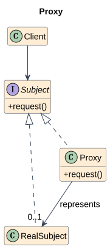
Subject 是客户端协议；RealSubject 执行业务；Proxy 保存真实对象引用或延迟创建能力；Client 通常只引用 Subject。
可编辑 PlantUML 源码。角色图根据参考 PDF 重绘，工程变体见下文。
完整 C++17 示例¶
#include <iostream>
#include <memory>
#include <string>
#include <utility>
struct Image {
virtual ~Image() = default;
virtual void display() = 0;
};
class RealImage final : public Image {
std::string path_;
public:
explicit RealImage(std::string p) : path_(std::move(p)) {
std::cout << "load " << path_ << '\n';
}
void display() override { std::cout << "show " << path_ << '\n'; }
};
class ImageProxy final : public Image {
std::string path_;
std::unique_ptr<RealImage> image_;
public:
explicit ImageProxy(std::string p) : path_(std::move(p)) {}
void display() override {
if (!image_) image_ = std::make_unique<RealImage>(path_);
image_->display();
}
};
int main() {
ImageProxy proxy("diagram.png");
Image& image = proxy;
image.display();
image.display();
}
调用过程、输出与 UML 对应¶
Image 是 Subject，RealImage 是 RealSubject，ImageProxy 是 Proxy。创建代理不加载；第一次显示输出 load diagram.png 和 show diagram.png，第二次只输出 show diagram.png。真实对象在代理中独占拥有，是图中关联的更严格组合实现。
优点、代价与适用边界¶
优点是延迟、授权、远程访问等策略透明；代价是多一层复杂性，远程代理还会引入网络失败。适合懒加载、权限门面、RPC 替身；直接调用已足够且无访问政策时不必代理。
与相似模式的区别¶
Decorator 增加功能职责，Proxy 管服务访问；Adapter 改变协议。日志包装可以是装饰器也可以是代理的一部分，必须按主要目的和契约判断。
更深入的 C++ 实现问题¶
代理不应让客户端误以为远程对象与本地对象完全一样：延迟、失败和重试仍需暴露合理语义。本例单线程；多个线程首次访问须同步，否则 unique_ptr 写入会竞争。
原笔记的基础案例与延伸（审核后保留）¶
代码示例¶
#include <iostream>
#include <memory>
using namespace std;
class Subject {
public:
virtual void request() = 0;
virtual ~Subject() = default;
};
class RealSubject : public Subject {
public:
void request() override {
cout << "Real subject request\n";
}
};
class Proxy : public Subject {
private:
unique_ptr<RealSubject> realSubject;
public:
void request() override {
if (!realSubject) {
// 懒加载：第一次用时才创建真实对象
realSubject = make_unique<RealSubject>();
}
cout << "Proxy before request\n";
realSubject->request();
cout << "Proxy after request\n";
}
};
一句话记忆¶
以替身保持同一服务接口，并控制对真实对象的访问。
Creational / 创建型模式¶
19. Abstract Factory / 抽象工厂模式¶
所属类别：Creational。 速查卡片
核心思想¶
为相关产品族提供创建接口，使客户端不依赖具体产品类。
为什么需要：从问题推导结构¶
若按钮和文本框分别由客户端决定具体类型，可能混用不同平台的产品，导致外观或资源约定不一致。需要把“选择产品族”变成一个配置决定。
典型案例： 跨平台 UI 一次选择整套 Windows 或 Mac 按钮与文本框。
先识别产品种类 Button、TextBox；再识别产品族 Windows、Mac；抽象工厂为每个种类定义创建方法，每个具体工厂实现一整行产品族。客户端只拿一个工厂创建所有相关产品。
UML 结构与参与者¶
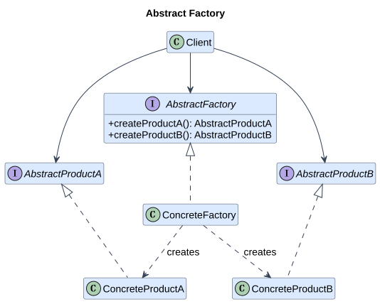
AbstractFactory 定义 createProductA/B；ConcreteFactory 创建一致产品族；AbstractProduct 是产品协议；ConcreteProduct 提供族内实现；Client 使用工厂与抽象产品。本文把 PDF 合并表示的产品框展开成 A/B 两个产品等级。图中以一个 ConcreteFactory 代表一个族，代码展开 Windows/Mac 两个族。
可编辑 PlantUML 源码。角色图根据参考 PDF 重绘，工程变体见下文。
完整 C++17 示例¶
#include <iostream>
#include <memory>
struct Button {
virtual ~Button() = default;
virtual void paint() const = 0;
};
struct TextBox {
virtual ~TextBox() = default;
virtual void show() const = 0;
};
class WinButton final : public Button {
void paint() const override { std::cout << "Windows button\n"; }
};
class WinTextBox final : public TextBox {
void show() const override { std::cout << "Windows textbox\n"; }
};
class MacButton final : public Button {
void paint() const override { std::cout << "Mac button\n"; }
};
class MacTextBox final : public TextBox {
void show() const override { std::cout << "Mac textbox\n"; }
};
struct GUIFactory {
virtual ~GUIFactory() = default;
virtual std::unique_ptr<Button> createButton() const = 0;
virtual std::unique_ptr<TextBox> createTextBox() const = 0;
};
class WinFactory final : public GUIFactory {
std::unique_ptr<Button> createButton() const override { return std::make_unique<WinButton>(); }
std::unique_ptr<TextBox> createTextBox() const override { return std::make_unique<WinTextBox>(); }
};
class MacFactory final : public GUIFactory {
std::unique_ptr<Button> createButton() const override { return std::make_unique<MacButton>(); }
std::unique_ptr<TextBox> createTextBox() const override { return std::make_unique<MacTextBox>(); }
};
void render(const GUIFactory& factory) {
auto button = factory.createButton();
auto box = factory.createTextBox();
button->paint(); box->show();
}
int main() {
WinFactory win;
MacFactory mac;
render(win);
render(mac);
}
调用过程、输出与 UML 对应¶
GUIFactory 是 AbstractFactory；Button 与 TextBox 是不同产品等级，Win/Mac 是不同族。render(win) 输出 Windows button/textbox，render(mac) 输出 Mac button/textbox。客户端函数不引用具体产品类型，unique_ptr 明确产品交给客户端拥有。
优点、代价与适用边界¶
优点是族切换集中、客户端与具体类解耦；代价是新增产品种类要修改工厂接口与所有族。适合跨平台 UI、成套数据库驱动；只有独立产品且不要求族一致时没有必要。
与相似模式的区别¶
Factory Method 以派生类决定创建类型，Abstract Factory 以一个对象提供整族创建服务；抽象工厂的方法经常由工厂方法实现。区别不是简单计数“一件还是多件”，还要看变化维度与创建协议。
更深入的 C++ 实现问题¶
普通返回 Button/TextBox 的接口不能在类型系统中完全禁止不同工厂的产品混用；一致性来自客户端统一使用一个族，严格需求可加入族标识或类型参数。新增产品族容易，新增种类较难，这是关键取舍。
原笔记的基础案例与延伸（审核后保留）¶
和工厂方法的区别¶
- 工厂方法：通过派生类重写创建步骤
- 抽象工厂：提供相关产品族的创建协议
代码示例¶
#include <iostream>
#include <memory>
using namespace std;
class Button {
public:
virtual void paint() = 0;
virtual ~Button() = default;
};
class TextBox {
public:
virtual void show() = 0;
virtual ~TextBox() = default;
};
class WinButton : public Button {
public:
void paint() override {
cout << "Windows Button\n";
}
};
class WinTextBox : public TextBox {
public:
void show() override {
cout << "Windows TextBox\n";
}
};
class MacButton : public Button {
public:
void paint() override {
cout << "Mac Button\n";
}
};
class MacTextBox : public TextBox {
public:
void show() override {
cout << "Mac TextBox\n";
}
};
class GUIFactory {
public:
virtual unique_ptr<Button> createButton() = 0;
virtual unique_ptr<TextBox> createTextBox() = 0;
virtual ~GUIFactory() = default;
};
class WinFactory : public GUIFactory {
public:
unique_ptr<Button> createButton() override {
return make_unique<WinButton>();
}
unique_ptr<TextBox> createTextBox() override {
return make_unique<WinTextBox>();
}
};
class MacFactory : public GUIFactory {
public:
unique_ptr<Button> createButton() override {
return make_unique<MacButton>();
}
unique_ptr<TextBox> createTextBox() override {
return make_unique<MacTextBox>();
}
};
适用场景¶
- 要创建“产品族”
- 不希望混用不同风格产品
- 系统需要切换整套实现
优缺点¶
优点：
- 保证同一产品族的一致性
- 客户端无需关心具体类
缺点：
- 新增“产品等级结构”很麻烦
- 类数量会增加
一句话记忆¶
为相关产品族提供创建接口，使客户端不依赖具体产品类。
20. Builder / 建造者模式¶
所属类别：Creational。 速查卡片
核心思想¶
把复杂对象的构造过程与表示分离，使同一构造步骤可以产生不同结果。
为什么需要：从问题推导结构¶
原笔记多参数 Person 构造函数说明了可读性问题，但 GoF Builder 还强调同一过程能构造不同表示。若每种格式各自重复业务收集与步骤排序，新增格式容易造成报告内容不一致。
典型案例： 报告导出按标题与正文两步构建文本或 HTML 表示。
让 Director 固定报告构造步骤；Builder 定义 title/body；ConcreteBuilder 选择文本或 HTML 表示并返回结果。原笔记链式 ComputerBuilder 是实用变体，Director 在这种变体中可由客户端承担。
UML 结构与参与者¶
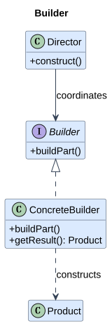
Director 调度 construct；Builder 定义 buildPart；ConcreteBuilder 保存构造中的状态并提供 getResult；Product 是结果对象，本文补充 PDF 未展开的 Product 角色。
可编辑 PlantUML 源码。角色图根据参考 PDF 重绘，工程变体见下文。
完整 C++17 示例¶
#include <iostream>
#include <string>
struct Builder {
virtual ~Builder() = default;
virtual void reset() = 0;
virtual void title(const std::string&) = 0;
virtual void body(const std::string&) = 0;
};
class TextBuilder final : public Builder {
std::string result_;
public:
void reset() override { result_.clear(); }
void title(const std::string& s) override { result_ += s + "\n"; }
void body(const std::string& s) override { result_ += s + "\n"; }
std::string result() const { return result_; }
};
class HtmlBuilder final : public Builder {
std::string result_;
public:
void reset() override { result_.clear(); }
void title(const std::string& s) override { result_ += "<h1>" + s + "</h1>"; }
void body(const std::string& s) override { result_ += "<p>" + s + "</p>"; }
std::string result() const { return result_; }
};
class ReportDirector {
public:
void construct(Builder& b) const {
b.reset();
b.title("Build report");
b.body("Success");
}
};
int main() {
ReportDirector director;
TextBuilder text;
HtmlBuilder html;
director.construct(text);
director.construct(html);
std::cout << text.result() << html.result() << '\n';
}
调用过程、输出与 UML 对应¶
ReportDirector 是 Director；TextBuilder/HtmlBuilder 是 ConcreteBuilder；std::string 是 Product。相同的标题/正文步骤产生两种表示；导演只知道 Builder，不知道结果是否包含 HTML 标签。图用关联，因为导演没有拥有本例建造者。
优点、代价与适用边界¶
优点是构造顺序与结果表示独立、能集中验证；代价是更多类与中间状态。适合复杂配置、报告、协议消息；简单聚合结构可以直接初始化，无需 Builder。
与相似模式的区别¶
Abstract Factory 直接创建一族产品，Builder 分步骤组装一个复杂结果；Factory Method 决定实例化类型。链式 setter 只是调用风格，只有管理构造过程与结果职责才体现建造者意图。
更深入的 C++ 实现问题¶
应定义重复构建后的 reset 行为、必填字段检查及 build 后还能否使用。本例 reset 后再构造，返回独立字符串值。HTML 示例用固定可信文本演示表示差异；处理外部输入时需转义字符，不能直接拼接。
原笔记的基础案例与延伸（审核后保留）¶
为什么需要它¶
如果一个对象有很多参数，直接用构造函数会变成：
Person p("Zhang", 20, "Xi'an", "student", true, false, 178, 70);
这种可读性很差，也容易传错顺序。
Builder 的思想是：一步一步构造。
代码示例¶
#include <iostream>
#include <string>
using namespace std;
class Computer {
public:
string cpu;
string gpu;
string memory;
string disk;
void show() const {
cout << "CPU: " << cpu << endl;
cout << "GPU: " << gpu << endl;
cout << "Memory: " << memory << endl;
cout << "Disk: " << disk << endl;
}
};
class ComputerBuilder {
private:
Computer computer;
public:
ComputerBuilder& setCPU(const string& c) {
computer.cpu = c;
return *this; // 返回自身，支持链式调用
}
ComputerBuilder& setGPU(const string& g) {
computer.gpu = g;
return *this;
}
ComputerBuilder& setMemory(const string& m) {
computer.memory = m;
return *this;
}
ComputerBuilder& setDisk(const string& d) {
computer.disk = d;
return *this;
}
Computer build() {
return computer;
}
};
int main() {
Computer pc = ComputerBuilder()
.setCPU("Intel i7")
.setGPU("RTX 4060")
.setMemory("16GB")
.setDisk("1TB SSD")
.build();
pc.show();
return 0;
}
适用场景¶
- 对象创建步骤多
- 参数多，构造函数可读性差
- 希望分步骤构造
优缺点¶
优点：
- 可读性强
- 构建过程清晰
- 适合复杂对象
缺点：
- 代码量会增加
- 对简单对象可能显得过度设计
一句话记忆¶
把复杂对象的构造过程与表示分离，使同一构造步骤可以产生不同结果。
21. Factory Method / 工厂方法模式¶
所属类别：Creational。 速查卡片
核心思想¶
定义创建产品的接口，并由派生类决定实例化哪一种产品。
为什么需要：从问题推导结构¶
业务流程既要创建目的地又要执行公共导出步骤。若直接 new ConsoleSink，替换目的地就得改流程。需要一个可重写的创建步骤，而让其余工作流继续复用。
典型案例： 日志导出工作流由派生导出器决定创建控制台还是文件目的地。
Creator 保存公共业务方法 anOperation；它调用虚 factoryMethod 获取抽象 Product；ConcreteCreator 重写创建方法返回 ConcreteProduct。选择具体 Creator 的地方仍可能依赖配置，但使用产品的公共业务代码无需知道具体产品。
UML 结构与参与者¶
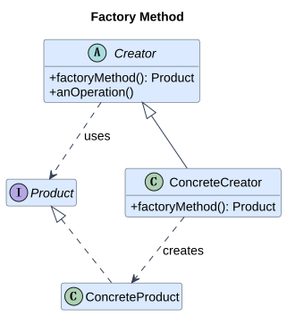
Product 定义产品协议；ConcreteProduct 实现协议；Creator 定义 factoryMethod 和使用产品的操作；ConcreteCreator 决定实际创建类型。
可编辑 PlantUML 源码。角色图根据参考 PDF 重绘，工程变体见下文。
完整 C++17 示例¶
#include <iostream>
#include <memory>
#include <sstream>
#include <string>
struct Sink {
virtual ~Sink() = default;
virtual void write(const std::string&) = 0;
};
class ConsoleSink final : public Sink {
void write(const std::string& s) override { std::cout << "console: " << s << '\n'; }
};
class BufferedSink final : public Sink {
std::ostringstream buffer_;
void write(const std::string& s) override {
buffer_ << s;
std::cout << "buffer: " << buffer_.str() << '\n';
}
};
class Exporter {
protected:
virtual std::unique_ptr<Sink> createSink() const = 0;
public:
virtual ~Exporter() = default;
void run() const {
auto sink = createSink();
sink->write("report ready"); // 公共业务流程
}
};
class ConsoleExporter final : public Exporter {
std::unique_ptr<Sink> createSink() const override { return std::make_unique<ConsoleSink>(); }
};
class BufferedExporter final : public Exporter {
std::unique_ptr<Sink> createSink() const override { return std::make_unique<BufferedSink>(); }
};
int main() {
ConsoleExporter console;
BufferedExporter buffered;
console.run(); buffered.run();
}
调用过程、输出与 UML 对应¶
Exporter 是 Creator，run 是 anOperation，createSink 是 factoryMethod；两个 Exporter 子类对应 ConcreteCreator。两次运行分别输出 console: report ready 与 buffer: report ready。缓冲区用于模拟不同后端，示例没有实际写文件。
优点、代价与适用边界¶
优点是创建变化与公共流程隔离；代价是新增产品可能增加 Creator 子类。适合框架扩展、导出/解析后端；一个固定构造函数或简单注册表足够时不必派生工厂。
与相似模式的区别¶
一个含 switch 的 create(type) 通常是 Simple Factory，不是 GoF Factory Method 的典型派生结构。Abstract Factory 切换产品族；Factory Method 的判据是把创建决定留给派生类，产品数并不是唯一判据。
更深入的 C++ 实现问题¶
原笔记 ShapeFactory 的虚创建方法符合工厂方法，但未展示 PDF 的 anOperation；这里补齐公共业务方法。unique_ptr
原笔记的基础案例与延伸（审核后保留）¶
为什么需要它¶
假设你有一个图形系统：
CircleRectangle
如果你在业务代码里直接写：
Shape* s = new Circle();
那么业务代码就和具体类 Circle 耦合死了。
以后想替换成 Rectangle 或新增 Triangle，就要改业务代码。
工厂方法模式把“创建哪种对象”封装起来，从而降低耦合。
结构¶
- 抽象产品（Product）
- 具体产品（ConcreteProduct）
- 抽象工厂（Creator）
- 具体工厂（ConcreteCreator）
代码示例¶
#include <iostream>
#include <memory>
using namespace std;
// 抽象产品
class Shape {
public:
virtual void draw() = 0;
virtual ~Shape() = default;
};
// 具体产品：圆形
class Circle : public Shape {
public:
void draw() override {
cout << "Draw Circle\n";
}
};
// 具体产品：矩形
class Rectangle : public Shape {
public:
void draw() override {
cout << "Draw Rectangle\n";
}
};
// 抽象工厂
class ShapeFactory {
public:
virtual unique_ptr<Shape> createShape() = 0;
virtual ~ShapeFactory() = default;
};
// 具体工厂：专门创建 Circle
class CircleFactory : public ShapeFactory {
public:
unique_ptr<Shape> createShape() override {
return make_unique<Circle>();
}
};
// 具体工厂：专门创建 Rectangle
class RectangleFactory : public ShapeFactory {
public:
unique_ptr<Shape> createShape() override {
return make_unique<Rectangle>();
}
};
int main() {
unique_ptr<ShapeFactory> factory = make_unique<CircleFactory>();
// 客户端并不知道具体 new 了什么，只知道拿到了一个 Shape
unique_ptr<Shape> shape = factory->createShape();
shape->draw();
return 0;
}
适用场景¶
- 创建逻辑复杂
- 希望把创建和使用分离
- 未来可能扩展更多具体类型
优点¶
- 降低客户端和具体类耦合
- 更利于扩展
- 符合开闭原则
缺点¶
- 类数量增加
- 结构更复杂
一句话记忆¶
定义创建产品的接口，并由派生类决定实例化哪一种产品。
22. Prototype / 原型模式¶
所属类别：Creational。 速查卡片
核心思想¶
通过多态复制已有实例来创建同种具体类型的新对象。
为什么需要：从问题推导结构¶
若客户端只持有 Layer 抽象引用，直接按基类拷贝会切片，客户端又不应该识别所有派生类型并手写构造参数。对象自己最了解如何复制具体类型与内部状态。
典型案例： 编辑器复制用户已经配置好的一种绘图图层。
Prototype 声明虚 clone；ConcretePrototype 使用自己的拷贝规则创建实例；客户端调用 clone 获得独立对象。原型不仅是“复制数据”，还提供在不知道具体类型时创建该类型对象的协议。
UML 结构与参与者¶
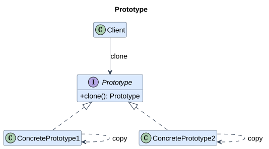
Prototype 定义 clone；ConcretePrototype1/2 实现各自的复制；Client 持有原型并调用 clone。原型注册表是可选的补充，并非模式必需角色。
可编辑 PlantUML 源码。角色图根据参考 PDF 重绘，工程变体见下文。
完整 C++17 示例¶
#include <iostream>
#include <memory>
#include <string>
#include <utility>
#include <vector>
struct Layer {
virtual ~Layer() = default;
virtual std::unique_ptr<Layer> clone() const = 0;
virtual void add(int point) = 0;
virtual void show() const = 0;
};
class Polyline final : public Layer {
std::string color_;
std::vector<int> points_;
public:
explicit Polyline(std::string c) : color_(std::move(c)) {}
std::unique_ptr<Layer> clone() const override {
return std::make_unique<Polyline>(*this);
}
void add(int p) override { points_.push_back(p); }
void show() const override { std::cout << color_ << " points=" << points_.size() << '\n'; }
};
int main() {
std::unique_ptr<Layer> original = std::make_unique<Polyline>("blue");
original->add(10);
auto copy = original->clone();
copy->add(20);
original->show();
copy->show();
}
调用过程、输出与 UML 对应¶
Layer 是 Prototype，Polyline 是 ConcretePrototype。通过 Layer 调用 clone 仍得到 Polyline；原对象输出 blue points=1，副本输出 blue points=2，说明 vector 的值拷贝没有共享可变坐标。图中第二种具体原型是标准结构的可选扩展，本例只实现一种。
优点、代价与适用边界¶
优点是保留动态类型与配置、客户端不依赖构造细节；代价是必须定义资源复制语义，深拷贝成本未必小。适合预配置模板、多态文档；简单值对象的普通拷贝已足够时不用虚 clone。
与相似模式的区别¶
Builder 按步骤重新构造，Prototype 从已有实例复制；Flyweight 共享已有状态，Prototype 通常建立独立可修改实例；Memento 目标是恢复而非创建。
更深入的 C++ 实现问题¶
原笔记“复制比重新构造快”需要按资源与算法衡量，不能保证。vector/string 的值拷贝自然产生独立存储；unique_ptr 需要显式深拷贝；shared_ptr 拷贝共享资源；文件句柄可能不可复制或需重新打开。
原笔记的基础案例与延伸（审核后保留）¶
代码示例¶
#include <iostream>
#include <memory>
using namespace std;
class Prototype {
public:
virtual unique_ptr<Prototype> clone() const = 0;
virtual void show() const = 0;
virtual ~Prototype() = default;
};
class ConcretePrototype : public Prototype {
private:
int value;
public:
ConcretePrototype(int v) : value(v) {}
unique_ptr<Prototype> clone() const override {
// 调用拷贝构造复制自己
return make_unique<ConcretePrototype>(*this);
}
void show() const override {
cout << "value = " << value << endl;
}
};
int main() {
unique_ptr<Prototype> p1 = make_unique<ConcretePrototype>(42);
unique_ptr<Prototype> p2 = p1->clone();
p1->show();
p2->show();
return 0;
}
浅拷贝和深拷贝¶
这是原型模式常见坑点。
如果对象内部有指针、动态内存、文件句柄等资源，复制时必须考虑：
- 浅拷贝：只复制指针值，两个对象指向同一块资源
- 深拷贝：复制资源本身，每个对象有独立副本
所以原型模式经常和“拷贝控制”一起考。
一句话记忆¶
通过多态复制已有实例来创建同种具体类型的新对象。
23. Singleton / 单例模式¶
所属类别：Creational。 速查卡片
核心思想¶
限制一个类只有一个实例，并提供全局访问入口。
为什么需要：从问题推导结构¶
如果业务真的要求唯一的协调者，允许任意构造会产生多个不一致配置。但“日志系统”“连接池”这些名字本身并不证明需要唯一：测试、多个工程窗口或多租户环境常需要多实例。
典型案例： 在明确只有一套进程日志配置的程序中提供统一日志入口。
先确认唯一范围与生命周期；把构造函数隐藏；禁用复制与赋值；instance 返回函数局部 static 引用。调用者借用对象而不拥有对象，不得 delete 返回地址。
UML 结构与参与者¶
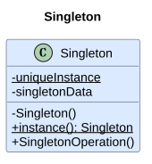
Singleton 保存 uniqueInstance、singletonData，并以静态 instance 提供访问。C++ 局部 static 是静态成员指针结构的现代实现变体，返回引用表达非空借用。
可编辑 PlantUML 源码。角色图根据参考 PDF 重绘，工程变体见下文。
完整 C++17 示例¶
#include <iostream>
#include <mutex>
#include <string>
class Logger {
std::mutex mutex_;
Logger() = default;
public:
Logger(const Logger&) = delete;
Logger& operator=(const Logger&) = delete;
Logger(Logger&&) = delete;
Logger& operator=(Logger&&) = delete;
static Logger& instance() {
static Logger logger;
return logger;
}
void log(const std::string& message) {
std::lock_guard<std::mutex> guard(mutex_);
std::cout << "[LOG] " << message << '\n';
}
};
int main() {
auto& first = Logger::instance();
auto& second = Logger::instance();
first.log("ready");
std::cout << std::boolalpha << (&first == &second) << '\n';
}
调用过程、输出与 UML 对应¶
Logger 是 Singleton，instance 是全局入口，局部 static logger 是唯一实例。输出 [LOG] ready 和 true。锁保护日志操作，初始化保护来自语言规则；二者是不同保证，不能混为一谈。
优点、代价与适用边界¶
优点是约束实例数且入口集中；代价是全局依赖、测试隔离困难、销毁顺序难控制。仅适合确有唯一性约束的基础服务；通常优先在组合根创建一个对象并通过依赖注入传递。
与相似模式的区别¶
Flyweight 按键共享许多实例，Singleton 只限制一个类的实例数；普通全局对象提供访问但不一定禁止额外构造。依赖注入可保持应用中只有一份服务，同时让类型本身仍可实例化。
更深入的 C++ 实现问题¶
C++11 起函数局部 static 的初始化受到并发保护，但实例的成员函数并不会自动线程安全。本例 log 使用互斥量。构造失败后后续调用可重试；构造时递归进入同一个静态初始化是未定义行为。动态库边界可能出现多份单例，退出阶段也要防止其他静态析构函数访问已销毁对象。
原笔记的基础案例与延伸（审核后保留）¶
本节保留饿汉式、懒汉式、加锁式和 Meyers 单例的原有推导。裸指针版本仅用于理解演变，存在未释放资源的历史写法；不得作为生产推荐。双重检查锁的错误版本专门标记为反例。
为什么要把构造函数私有化¶
如果构造函数是 public，那外部就可以这样写：
Singleton a;
Singleton b;
这样就创建出多个对象了，违背了“全局只能有一个实例”的要求。
所以单例模式通常会：
- 把构造函数私有化：外部不能直接创建对象
- 把拷贝构造和赋值也禁用：避免复制出第二个对象
- 提供一个静态函数
getInstance()：外部只能通过它拿到唯一对象
这就是“限制创建入口”的核心思想。
单例模式最基本写法¶
#include <iostream>
using namespace std;
class Singleton {
private:
// 1) 构造函数私有化：外部不能写 Singleton s;
Singleton() {
cout << "Singleton constructor called\n";
}
// 2) 禁止拷贝构造：防止 Singleton s2 = s1;
Singleton(const Singleton&) = delete;
// 3) 禁止赋值：防止 s2 = s1;
Singleton& operator=(const Singleton&) = delete;
// 4) 唯一实例的静态指针
static Singleton* instance;
public:
// 5) 提供全局访问点
static Singleton* getInstance() {
if (instance == nullptr) {
instance = new Singleton();
}
return instance;
}
void doSomething() {
cout << "Singleton is working\n";
}
};
// 静态成员类外初始化
Singleton* Singleton::instance = nullptr;
int main() {
// 外部不能这样写：Singleton s; 因为构造函数是 private
Singleton* s1 = Singleton::getInstance();
Singleton* s2 = Singleton::getInstance();
s1->doSomething();
s2->doSomething();
// 地址相同，说明拿到的是同一个对象
cout << s1 << endl;
cout << s2 << endl;
return 0;
}
“推荐写法”到底怎么使用¶
很多人看到“构造函数私有化，外部不能创建对象”，但不知道实际怎么用。
外部不能这样用¶
Singleton s; // 错误：构造函数 private
Singleton s2(s); // 错误：拷贝构造 deleted
Singleton s3 = s; // 错误：拷贝构造 deleted
只能这样用¶
Singleton* s = Singleton::getInstance();
s->doSomething();
也就是说：
- 你不是“自己 new 一个对象”
- 你不是“自己定义一个对象”
- 你是“向类要那个唯一对象”
这就是单例模式的使用方式。
它像一个“全局唯一柜台”：
- 柜台不让你自己开分店
- 你只能去官方窗口办理业务
单例模式的几种常见写法¶
单例模式最常见的面试点就在这里。
A. 饿汉式（Eager Singleton）¶
思想¶
具有静态存储期的对象在首次需要之前或启动阶段完成初始化（具体时机受 C++ 动态初始化规则约束）。
也就是说：不等你第一次调用 getInstance()，对象就已经存在了。
代码¶
#include <iostream>
using namespace std;
class EagerSingleton {
private:
EagerSingleton() {
cout << "EagerSingleton constructor\n";
}
EagerSingleton(const EagerSingleton&) = delete;
EagerSingleton& operator=(const EagerSingleton&) = delete;
// 程序开始时就创建好对象
static EagerSingleton instance;
public:
static EagerSingleton& getInstance() {
return instance;
}
void work() {
cout << "Eager singleton working\n";
}
};
// 非局部静态对象；注意跨翻译单元初始化顺序与允许的延迟初始化
EagerSingleton EagerSingleton::instance;
int main() {
EagerSingleton& s = EagerSingleton::getInstance();
s.work();
return 0;
}
优点¶
- 实现简单
- 天然避免“第一次创建时的竞争问题”
- 初始化安排与并发业务访问是两回事；共享成员的读写仍须同步
缺点¶
- 即使程序根本不用这个对象，它也会提前创建
- 可能造成启动期开销
- 如果这个对象依赖其他静态对象，可能遇到 静态初始化顺序问题
什么时候适合¶
- 单例对象很轻量
- 程序启动后一定会用到
- 不在意提前构造
B. 懒汉式（Lazy Singleton）¶
思想¶
第一次真正需要时再创建对象。
这叫“延迟初始化”。
非线程安全版本¶
#include <iostream>
using namespace std;
class LazySingleton {
private:
LazySingleton() {
cout << "LazySingleton constructor\n";
}
LazySingleton(const LazySingleton&) = delete;
LazySingleton& operator=(const LazySingleton&) = delete;
static LazySingleton* instance;
public:
static LazySingleton* getInstance() {
// 第一次调用时才创建
if (instance == nullptr) {
instance = new LazySingleton();
}
return instance;
}
void work() {
cout << "Lazy singleton working\n";
}
};
LazySingleton* LazySingleton::instance = nullptr;
优点¶
- 用到时才创建
- 节省不必要的初始化开销
缺点¶
- 多线程下不安全
为什么懒汉式会有线程安全问题¶
假设有两个线程同时第一次调用 getInstance()：
if (instance == nullptr) {
instance = new LazySingleton();
}
可能发生：
- 线程 A 判断
instance == nullptr，成立 - 线程 B 也判断
instance == nullptr，也成立 - A 创建一个对象
- B 又创建一个对象
结果：创建了两个实例。
这就违反了单例模式的要求。
所以说：
懒汉式如果不加同步控制，在多线程环境下通常是不安全的。
线程安全的懒汉式：加锁版本¶
#include <iostream>
#include <mutex>
using namespace std;
class ThreadSafeSingleton {
private:
ThreadSafeSingleton() {
cout << "ThreadSafeSingleton constructor\n";
}
ThreadSafeSingleton(const ThreadSafeSingleton&) = delete;
ThreadSafeSingleton& operator=(const ThreadSafeSingleton&) = delete;
static ThreadSafeSingleton* instance;
static mutex mtx; // 用于保护第一次创建过程
public:
static ThreadSafeSingleton* getInstance() {
lock_guard<mutex> lock(mtx); // 自动加锁/解锁
if (instance == nullptr) {
instance = new ThreadSafeSingleton();
}
return instance;
}
void work() {
cout << "Thread-safe singleton working\n";
}
};
ThreadSafeSingleton* ThreadSafeSingleton::instance = nullptr;
mutex ThreadSafeSingleton::mtx;
为什么这样是线程安全的¶
因为同一时刻只有一个线程能进入加锁区域：
- 第一个线程进来，发现为空，于是创建对象
- 第二个线程只能等第一个线程结束后再进来
- 第二个线程进来时，发现对象已经存在，不会再创建
缺点¶
- 每次调用
getInstance()都要加锁 - 即使对象已经创建好了，后续访问还会有锁开销
双重检查锁（Double-Checked Locking）¶
它想优化“每次都加锁”的问题。
#include <iostream>
#include <mutex>
using namespace std;
class DCLSingleton {
private:
DCLSingleton() {
cout << "DCLSingleton constructor\n";
}
DCLSingleton(const DCLSingleton&) = delete;
DCLSingleton& operator=(const DCLSingleton&) = delete;
static DCLSingleton* instance;
static mutex mtx;
public:
static DCLSingleton* getInstance() {
// 第一次检查：大部分时候对象已存在，可直接返回
if (instance == nullptr) {
lock_guard<mutex> lock(mtx);
// 第二次检查：防止多个线程排队进入后重复创建
if (instance == nullptr) {
instance = new DCLSingleton();
}
}
return instance;
}
};
DCLSingleton* DCLSingleton::instance = nullptr;
mutex DCLSingleton::mtx;
说明¶
上面的普通指针版本在 C++17 中仍然错误，不只是旧内存模型的问题。 锁外读取 instance 与锁内写入 instance 没有同步，构成数据竞争，行为未定义；volatile 不能修复。正确实现需要原子指针及 acquire/release 发布语义，并另外管理生命周期；通常直接使用局部 static 或 std::call_once。
面试时你可以这样说：
双重检查锁是为了减少每次访问都加锁的开销，但实现细节容易出错。现代 C++ 更推荐使用函数内局部静态对象实现单例。
现代 C++ 推荐写法：Meyers Singleton¶
这是今天最推荐掌握的写法。
#include <iostream>
using namespace std;
class Singleton {
private:
Singleton() {
cout << "Singleton constructor\n";
}
Singleton(const Singleton&) = delete;
Singleton& operator=(const Singleton&) = delete;
public:
static Singleton& getInstance() {
// C++11 起，函数内局部静态变量的初始化是线程安全的
static Singleton instance;
return instance;
}
void doSomething() {
cout << "Doing something...\n";
}
};
int main() {
// 注意这里拿到的是引用
Singleton& s1 = Singleton::getInstance();
Singleton& s2 = Singleton::getInstance();
s1.doSomething();
// 取地址后可看到是同一个对象
cout << &s1 << endl;
cout << &s2 << endl;
return 0;
}
为什么推荐它¶
1）懒加载¶
只有第一次调用 getInstance() 才会创建对象。
2）线程安全¶
从 C++11 开始，标准保证：
函数内部局部静态变量的初始化过程是线程安全的。
这意味着多个线程第一次同时调用时，不会构造出多个对象。
3）不需要自己 new¶
避免了手动内存管理问题。
4）生命周期自动管理¶
正常终止时会析构已完成初始化的局部静态对象；仍需考虑其他静态对象的析构顺序。
单例模式的完整推荐版¶
#include <string>
#include <iostream>
using namespace std;
class Logger {
private:
// 构造函数私有化，防止外部随意创建对象
Logger() {
cout << "Logger created\n";
}
// 禁止拷贝，避免复制出第二个对象
Logger(const Logger&) = delete;
// 禁止赋值
Logger& operator=(const Logger&) = delete;
public:
// 提供唯一访问入口
static Logger& getInstance() {
// 局部静态对象：懒加载 + C++11 线程安全
static Logger instance;
return instance;
}
void log(const string& msg) {
cout << "[LOG] " << msg << endl;
}
};
int main() {
// 正确使用方式：通过 getInstance() 获取唯一对象
Logger& logger = Logger::getInstance();
logger.log("Program started");
logger.log("Loading config...");
// 再拿一次，仍然是同一个对象
Logger& logger2 = Logger::getInstance();
logger2.log("Still the same logger");
// 比较地址
cout << &logger << endl;
cout << &logger2 << endl;
return 0;
}
单例模式适用场景¶
满足唯一性约束时可考虑：
- 日志系统
- 配置系统
- 线程池管理器
- 缓存管理器
- 资源注册中心
不适合：
- 业务对象到处都做成单例
- 需要多个独立实例的场景
- 测试中需要灵活替换对象的场景
单例模式优缺点¶
优点¶
- 保证全局唯一实例
- 避免重复创建高代价对象
- 便于提供统一访问入口
缺点¶
- 全局状态会增加耦合
- 单元测试不友好
- 生命周期难控制时可能产生隐患
- 滥用后会让代码像“到处可访问的全局变量”
面试回答模板¶
什么是单例模式¶
单例模式是一种创建型模式，它保证某个类在整个程序运行期间只有一个实例，并提供一个全局访问点。典型做法是把构造函数私有化，禁止拷贝和赋值，然后通过静态成员函数返回唯一实例。
为什么构造函数要私有化¶
因为如果构造函数是公有的，外部就可以随意创建多个对象，这就违背了单例“唯一实例”的要求。私有化后，类外只能通过 getInstance() 获取对象。
单例有哪些写法¶
常见有饿汉式、懒汉式、加锁懒汉式、双重检查锁、Meyers Singleton。现代 C++ 最推荐的是函数内局部静态对象，因为它既支持懒加载，又能利用 C++11 保证初始化线程安全。
一句话记忆¶
限制一个类只有一个实例，并提供全局访问入口。
跨模式对照与学习建议（原笔记整合）¶
1. 工厂方法 vs 抽象工厂¶
工厂方法¶
- 关注“派生类决定实例化类型”
- 例如：创建一个按钮
抽象工厂¶
- 关注“创建一组相关产品”
- 例如：一整套 Windows 风格控件
2. 装饰器 vs 代理¶
装饰器¶
- 重点在于“增强功能”
代理¶
- 重点在于“控制访问”
3. 策略模式 vs 状态模式¶
策略模式¶
- 外部主动选择算法
- 算法之间通常平级可替换
状态模式¶
- 根据对象状态响应事件并遵循转换规则，可以由内部条件或外部事件触发
- 重点是状态驱动行为变化
4. 适配器 vs 外观¶
适配器¶
- 解决接口不兼容
外观¶
- 解决子系统太复杂，提供统一入口
现代 C++ 的实现建议¶
1. 优先掌握这些高频模式¶
面试和实战最常见的通常是：
- 单例模式
- 工厂方法模式
- 抽象工厂模式
- 建造者模式
- 适配器模式
- 装饰器模式
- 代理模式
- 观察者模式
- 策略模式
- 状态模式
2. 写 C++ 代码时尽量结合现代特性¶
推荐：
- 用
unique_ptr代替裸指针管理所有权 - 用
shared_ptr表示共享拥有 - 用 RAII 管资源
- 用
= delete禁止拷贝 - 用
override明确重写虚函数 - 用
default简化析构或默认构造
3. 不要把模式和“继承”绑定死¶
很多模式今天也可以用：
- 模板
- lambda
std::function- 组合
- 泛型编程
实现得更简洁。
面试复习版：一句话记忆¶
- 责任链：请求沿链传递直到被处理
- 命令：把请求封装成对象
- 解释器：解释执行某种语言规则
- 迭代器：顺序访问容器元素
- 中介者：对象不直接互相联系，由中介协调
- 备忘录：保存并恢复历史状态
- 观察者：状态变化时通知订阅者
- 状态：对象在不同状态下行为不同
- 策略：封装一组可替换算法
- 模板方法：父类定流程，子类定细节
- 访问者：不改元素类，新增操作
- 适配器：把不兼容接口接起来
- 桥接：抽象和实现分离，独立变化
- 组合：统一处理单个对象和对象组合
- 装饰器：不改原类，动态加功能
- 外观：给复杂系统提供统一简单入口
- 享元：共享相同内部状态，节省内存
- 代理：通过代理控制访问真实对象
- 抽象工厂：创建一整套相关对象
- 建造者：复杂对象分步骤构建
- 工厂方法：由派生类重写产品创建步骤
- 原型：通过复制已有对象创建新对象
- 单例：一个类全局只有一个对象
学习路线与进一步理解¶
学习设计模式时，建议按这个顺序来：
- 先学 单例、工厂、策略、观察者、状态、适配器、装饰器
- 每学一个模式都问自己：
- 它解决什么问题？
- 不用它会怎样？
- 它的代价是什么？
- 不要死背 UML 图，重点理解 设计动机
- 多写小例子，尤其要练习：
- 怎么调用
- 为什么这么调用
- 客户端和具体类是如何解耦的
继续深入时，可沿下列方向把本教材中的结构推广到具体项目：
- 每个模式的 UML 类图
- 每个模式的真实工程案例
- 每个模式的 LeetCode / 项目类比
- 设计模式与 SOLID 原则的关系
- 现代 C++ 风格重写版
SOLID 与模式的关系¶
单一职责把不同变化原因隔离：例如文档存储与命令历史分开。开闭原则鼓励在已有抽象扩展点增加实现，但新增模式类也有成本。里氏替换要求实现遵守接口契约，例如编码策略都必须返回同样含义的编码结果，不能任意改变错误约定。接口隔离避免让所有节点实现无意义的方法，Composite 安全式接口就是一个取舍。依赖倒置让业务依赖协议，而不是具体设备；Factory Method、Abstract Factory、Bridge 都可以服务这个目标。
这些原则不能用来证明某个类层次一定正确。先观察变化频率和维护成本，再决定抽象边界。一个函数、值类型或 lambda 就能表达清楚的场景，不需要建立完整的 GoF 类图。
本轮审核记录与参考依据¶
| 原笔记问题 | 处理方式 |
|---|---|
| 23 个名称齐全，但多章只有定义 | 按统一顺序保留既有基础内容，并为每章增加动机、现实案例、UML、独立 main、调用追踪与边界 |
| 没有 UML 或图片链接 | 新增 23 张统一风格角色图，复用到两份文档；源文件同时保留 |
| 创建型优先且与 PDF 图解顺序不同 | 改为 Behavioral → Structural → Creational，两页按分栏顺序记录 |
| 普通指针双重检查锁被弱化为“容易出坑” | 明确 C++17 数据竞争与未定义行为，标为不可运行反例，推荐局部 static / call_once |
| 饿汉式使用“类加载”术语、初始化线程安全与操作安全混淆 | 改为 C++ 静态初始化术语，区分对象初始化与成员并发访问 |
| 多个片段没有 main，string/move 依赖传递包含 | 新增独立完整示例；旧片段补直接头文件，并区分编译片段与错误演示 |
| 观察者裸指针没有退订与存活规则 | 补 detach、weak_ptr、快照通知，说明原基础版限制 |
| 工厂方法与抽象工厂仅按产品数量区分 | 补继承创建步骤与产品族两个变化维度，并展示 Creator 公共操作 |
| Builder 只示范链式 setter | 保留 ComputerBuilder，同时补 Director 与不同表示的 GoF 结构 |
| 原型复制成本、资源拷贝语义未充分说明 | 补切片、多态 clone、值拷贝/共享/不可复制资源边界 |
| State、Visitor 等缺少机制说明 | 补安全转换、双分派、封闭类型扩展代价等 |
PDF 自身也有需要修正的简化：Composite 子节点类型应是 Component；Interpreter 的求值结果与 Iterator 的工厂/游标结果不应一律标为 Context；Abstract Factory 的产品 A/B 在图中需要分别表达；Director 并不总是拥有 Builder。其余关系保留结构意图，并在具体代码旁解释所有权差异。
主要来源为用户提供的两页图解卡。进一步查阅 GoF 原著的出版方页面，对照模式的动机、结构、参与者与后果。C++ 并发语义核对了标准工作草案 stmt.dcl 的局部静态初始化规则及 intro.races 的数据竞争规则。链接指向当前工作草案，文中只使用 C++17 已具备的规则，并非宣称草案等于 C++17 的发布文本。
验证记录¶
- 两份文档的 23 个模式标题、英文锚点及排列顺序完全对应；行为型 11、结构型 7、创建型 5。
- 23 份 PlantUML 源码成功渲染为 23 张 SVG；逐张查看渲染结果，并修正箭头附近的标注布局。两份页面各引用同一组 23 张图。
- 23 个新增完整程序使用 MinGW GCC 15.2.0，以
g++ -std=c++17 -Wall -Wextra -Wpedantic -Werror编译并运行成功，输出与各章追踪一致。原稿保留的 19 个带头文件程序/类定义片段另以-c检查通过；5 个纯用法片段与标记为 text 的错误反例不作为独立程序编译。 - 新页面的文件链接、跨页片段、生成 HTML 锚点和图片资源均核对；仅修改相关 Cpp 导航。
mkdocs build正常完成。mkdocs build --strict被本次范围之外的notes/Cpp/UML/UML.md指向缺失速查页面及图片资源的警告阻止；该文件不在本次修改范围，未顺带修改。- 编译与示例运行证明了当前演示程序可执行，不代表已验证多线程、网络故障、所有异常路径或生产性能。各章已明确示例的简化与边界。
- 未执行 Git commit、pull 或 push。